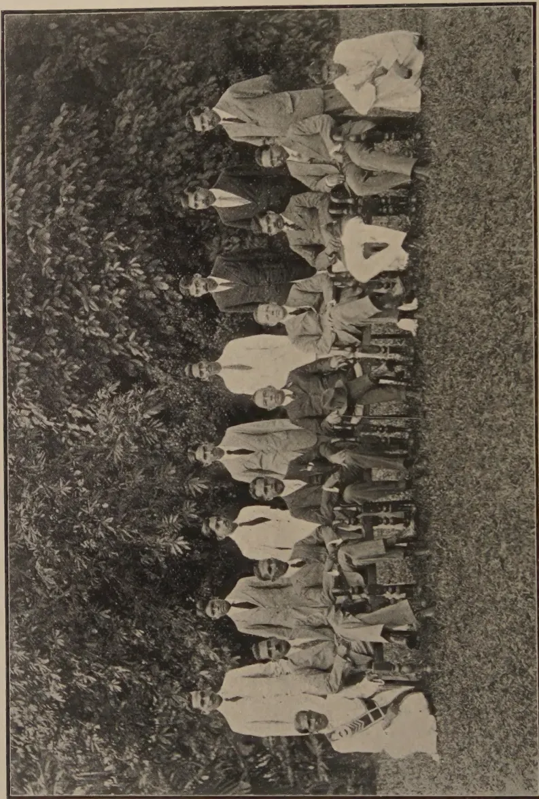

THE
TROPICAL AGRICULTURIST:
JOURNAL OF THE
CEYLON AGRICULTURAL SOCIETY.
VOL. LIII.
PERADENIYA, NOVEMBER, 1919.
No. 5.
THE GRAFTING OF RUBBER.
The attention of most growers of rubber has in recent years been directed to the possibility of securing increased yields per acre. The possibility of seed selection has been considered and many estates have endeavoured to plant seed from selected trees in their young clearings.
Similarly the Department of Agriculture, Ceylon, has made special plantings from the No. 2 Heneratgoda tree and will next year have areas planted with seedlings from this tree ready for tapping.
Tapping experiments have demonstrated that a certain percentage of trees in every field give yields in excess of the majority of the plantation. This fact is well known to all proprietors and superintendents of rubber estates and to the tappers. There are sometimes stand-out trees and these are also well known to tappers. Estates have made use of this information when thinning operations have been undertaken. The poorer trees have as far as possible been removed and the better ones allowed to remain. In this manner the general condition of the cultivation has frequently been improved without material loss of crop immediately after thinning. The differences in yields in individual trees incline most planters to plant out closer than they would if they did not feel that some thinning of poor yielders will be inevitable.
Fuller details are gradually being secured in regard to the yields of individual trees, and figures from carefully conducted experiments in the Federated Malay States and in Java show how wide these differences can be,
298[NOVEMBER, 1919.It has also been fairly demonstrated that good yielders remain as good yielders throughout their life, provided that they are maintained in health and do not suffer from disease.
Those interested in rubber and the rubber industry naturally ask themselves if use cannot be made of this knowledge for the benefit of the industry. Cannot a general improvement be effected by seed selection, or is it not possible to secure increased yields over wide areas by vegetative propagation?
Experiments with budding and grafting have been made in Malaya and in Java. Recent publications from Java indicate the methods employed, and the reports indicate that these methods have on the whole been successful. Sufficient evidence has been secured to warrant the trial of these methods in Ceylon, and it is possible that the rubber industry may see extensive areas of budded or grafted plants put out.
There is no desire that extravagant hopes should be entertained. The experimental stage has not yet been passed and it has yet to be demonstrated that the systems can be generally adopted.
Trials should, however, be made with a view to securing definite information. Not only can trials be made on young stumps, but it might also be considered whether grafts cannot be put on to the old stumps of the poorer yielders, which for certain reasons it may not be desirable to remove.
The processes involved are simple ones and could readily be carried out by careful workers; and it is intended to make some trials at Peradeniya in order to gain experience in regard to the methods that will suit Ceylon conditions. Similar trials might be made upon rubber estates and it is possible that grafts or bud-wood could be supplied from No. 2 tree to estates, if required. When experience has been gained it would be possible to issue a general statement for the guidance of the industry.
Much has been done by grafting and budding in the improvement of other industries and it is possible that something can be done for rubber. Work is also required upon seed selection. This was started by DR. LOCK when he was present in Ceylon, but naturally years must elapse before definite and exact information will be available.
It is imperative, however, that more research should be carried out for the rubber industry, and co-operation between estates and scientific workers is desired in all rubber-producing countries.
NOVEMBER, 1919.]299DR. P. J. S. CRAMER,
Chief of Division of Plant Breeding, Dept. of Agriculture, Buitenzorg, Java.
[The following English translation of a paper published by DR. CRAMER in the publications of the Department of Agriculture, Java, will be read with interest by all cultivators of rubber in the Colony.—ED. T.A.]
In the Government Experiment Garden for coffee at Bangelan (East Java) one field of coffee was planted with Hevea to try this plant as a shade tree. The plants were put out in 1901; the coffee was put at 7 by 7 feet, the rubber was put at 21 by 21 feet one row, near to the edge of the field, was somewhat nearer. A map gives an idea of the distribution of the trees on the field. (Fig. 1.)
TABLE I.
MAP OF THE TREES.
| * | x 51 |
x 52 |
x 53 |
x 54 |
x 55 |
x 56 |
x 57 |
||
| x 50 |
x 49 |
x 48 |
x 47 |
x 46 |
x 45 |
x 44 |
x 43 |
||
| * | x 37 |
x 38 |
x 39 |
x 40 |
x 41 |
x 42 |
|||
| * | x 36 |
x 35 |
x 34 |
x 33 |
x 32 |
x 31 |
x 30 |
||
| x 22 |
x 23 |
x 24 |
x 25 |
x 26 |
x 27 |
x 28 |
x 29 |
||
| * | x 21 |
x 20 |
x 19 |
x 18 |
x 17 |
x 16 |
x 15 |
||
| * | x 8 |
x 9 |
x 10 |
x 11 |
x 12 |
x 13 |
x 14 |
||
| x 7 |
x 6 |
x 5 |
x 4 |
x 3 |
x 2 |
x 1 |
21 voet |
The underlined numbers were kept with the thinning out.
From natural causes a few trees died out; when I examined the trees for the first time, in 1915, 57 trees were left. They were 14 years old and had developed in high, thick trees, the growth was quite satisfactory, taking into account that the field was at 1,800 feet above sea-level. Up till that date they had never been tapped.
300[NOVEMBER, 1919.In 1917 a program was made for a tapping experiment, which was carried out in 1918. From January till May of that year the trees were tapped with two cuts, on of the girth, left side; at first on alternate days, after 15 April 1918, every day.
The rubber was cured by the Brazilian process, coagulating the latex on a stick by smoke. A square furnace for producing the smoke, as constructed by MR. DONALD MACGILLVRAY, of Sido Redjo, Semarang, Java, proved quite satisfactory. The latex of each tree was collected separately and coagulated with the rubber of previous tapping of the same tree. With the Brazilian curing process this is easy enough. The trees, the cups and the stick are numbered and the latex of say tree No. 43 in cup No. 43 is added every day to the ball on stick No. 43. So for each tree one ball of coagulated rubber was obtained; by the size of the ball the individual production could already be estimated. It may be noted, that with the Brazilian process somewhat more dry rubber is obtained, than by the ordinary process, from the same quantity of latex.
To give some more details about the number of tappings, in 1918 we had from the 1st January till the 1st of May 88 tapping days, leaving out days with morning rains.
Till the 15th of April the tapping was done on alternate days, afterwards every day; this gives altogether per tree 59 tappings.
In July 1918 the trees were thinned out, half the number were cut out. For this we took the poorest producers, not taking in account the space. One tree was cut by mistake, so that in 1919 the tapping was carried on with 28 trees. The comparison of the individual production and of the figures for 1918 and 1919 can help us to answer various questions and may help also to get a better insight of what happens, when we apply selective thinning out on a field. Individual productions of all trees in 1918 are given in
TABLE II.| No. of the tree |
Production | No. of the tree |
Production |
|---|---|---|---|
| 1 | 1962 | ... | Carried forward 38,532 |
| 2 | 2005 | ... | 30 830 |
| 3 | 512 | ... | 31 543 |
| 4 | 2036 | ... | 32 717 |
| 5 | 874 | ... | 33 860 |
| 6 | 1750 | ... | 34 1874 |
| 7 | 515 | ... | 35 1585 |
| 8 | 690 | ... | 36 1602 |
| 9 | 2652 | ... | 37 1432 |
| 10 | 895 | ... | 38 552 |
| 11 | 520 | ... | 39 1485 |
| 12 | 2235 | ... | 40 1786 |
| 13 | 1279 | ... | 41 1078 |
| 14 | 754 | ... | 42 744 |
| 15 | 2894 | ... | 43 2983 |
| 16 | 1380 | ... | 44 551 |
| 17 | 1185 | ... | 45 1992 |
| 18 | 1160 | ... | 46 1929 |
| 19 | 1323 | ... | 47 862 |
| 20 | 650 | ... | 48 613 |
| 21 | 1172 | ... | 49 1570 |
| 22 | 1240 | ... | 50 705 |
| 23 | 1177 | ... | 51 1495 |
| 24 | 1700 | ... | 52 1940 |
| 25 | 645 | ... | 53 617 |
| 26 | 567 | ... | 54 1390 |
| 27 | 1587 | ... | 55 868 |
| 28 | 2413 | ... | 56 2185 |
| 29 | 760 | ... | 57 2471 |
| To carry forward | 38,532 | 75,791 K.G. |
2. In which proportion do good and poor producers contribute to the total crop?
To find an answer on this question we have at first to locate the extremes for the individual productions. We see then, that the poorest tree (No. 3) gave 512 grams, the best one (No. 43) 2,983 grams. The average, calculated by totalising the individual productions (75,791 Kg.) and dividing this figure by the number of the trees (57,) was 1,328 gram. The worst producer gave 0.39 times, the best one 2.24 times the average production. These figures would be further from the average, if we had worked a few thousand trees, instead of 57.
Now, what we want to know is: when we have the total production of the field before us, how much then is derived from the best trees, and how much from the poorest half?
To find this proportion I have ranged the trees in groups, according to the individual production, going up with 300 grams: to the first group contain the trees giving 0—300 grams; the second group the trees with 301—600 grams, etc. Then for each group the production of the trees belonging to it were totalised. We find so the following figures:
TABLE No. III.| Individual production of dry rubber |
No. of trees of the group |
Total production of the group |
|---|---|---|
| 0 — 300 | — | — |
| 301 — 600 | 7 trees | 3'760 Kg. |
| 601 — 900 | 16 " | 12'084 " |
| 901 — 1200 | 5 " | 5'772 " |
| 1201 — 1500 | 8 " | 11'024 " |
| 1501 — 1800 | 7 " | 11'580 " |
| 1801 — 2100 | 7 " | 13'738 " |
| 2101 — 2400 | 2 " | 4'420 " |
| 2401 — 2700 | 3 " | 7'536 " |
Now, when we put a line between the groups of 901-1200 grams and 1201-1500 grams, at about the average production (1328 grams) half the number of the trees are above it, half are under it. The first three groups, containing 28 trees, are above the line, the other six groups with 29 trees are under it.
We can totalise now also the productions of both halves. We see then, that the 28 poorest trees, with productions of 300-1200 grams, gave together 21,616 Kg.; the 29 best trees, under the line with a production of more than 1200 grams, gave together 54,175 Kg. Or, if we calculate the percentages the 49% poorest trees gave 28.5% of the crop, the remaining 51% gave 71.5%. If we round off these figures, we may say that if we divide our trees according to their individual production in two groups with the same number of trees, one of the good and one of the bad producers, the good group will contribute 70%, the poor group only 30% to the total crop.
Now we come to ask ourselves: can we not distribute better the soil, the air, the moisture, in general the plant food we dispose of for our trees, so that we take it away from the poor producers to give it to the good milkers?
302[NOVEMBER, 1919.Certainly we can do that, by cutting out the bad producers. If the planting distance is so dense that the trees are too large for the space they occupy they will take advantage of the increased space supplied to them at once. And, as by their disposition they can make more rubber under the same circumstances as their predecessors, they soon will increase their production with more than what would be equivalent with the production of the cut out trees.
The opinion expressed just above presumes that the grouping of the trees according to their individual production is based on their initial disposition and that the differences in production are not due to external factors, for instance, more space. To investigate this point a little deeper, we may compare the individual productions with the space each tree disposes of.
To do this I divided the trees in groups according to the space occupied. The first group are those which are quite close in between other trees, having at each side a neighbour. A second group are those which have one free place neighbouring them; most of the trees at the edge of the field belong to this group. The third group contains the trees with two free sides; for instance, the trees at the corners of the field. At last a few trees have three sides free. In grouping the trees in this way, the first group contains the following trees (compare map on page 299): 11, 12, 13, 16, 17, 18, 19, 23, 24, 25, 26, 27, 32, 33, 34, 35, 38, 39, 40, 41, 44, 45, 46, 47, 48, 49; in total 26 trees. The following table shows the groups :
TABLE No. IV.
| Space. | Number of trees. | Total production of group. | Average production per tree. |
|---|---|---|---|
| Closed in | ... 26 trees | 32'212 Kg. | 1239 grams |
| One side free | ... 18 ,, | 23'940 ,, | 1330 ,, |
| Two sides free | ... 10 ,, | 17'414 ,, | 1741 ,, |
| Three sides free | ... 3 ,, | 2'225 ,, | 742 ,, |
We may conclude from these figures that space has some influence and that in general the production is somewhat higher if the trees have more space. There is one exception; the group with the largest space shows the lowest production per tree, but this can be easily explained. The group contains only three trees, No. 8 (690 gr.) No. 30 (830 gr.) and No. 50 (705 gr.). So fortuitously all the trees of this small group are bad producers; in other words, the influence of the initial character of the trees is so strong, that the favourable external conditions are not able to counteract it. When we compare the differences in individual productions of one group, with the differences between the groups, we come to the same conclusion. Take for instance the second group (trees with one free side); tree No. 28 belongs to it with a production of 2413 gr., and tree No. 31, with 543 gr.—The differences between the trees are much larger than those between the different groups.
Experience with other permanent crops has given instances of the same. I think we may safely say that the large differences we meet, when we compare the production of individual trees, are greatly caused by the initial character of the tree, and only for a small part by the external conditions.
NOVEMBER, 1919.]3034. The production after thinning out.As remarked already, in July, 1918, half the number of the trees were cut out; only the best producers were kept. They were tapped again in 1919, with the exception of tree No. 4, which suffered from bark disease. The individual production in 59 tappings in 1918 and 1919 for the trees are given in the following table:
TABLE No. V.| No. of tree. | Production 1918. | Production March-April, 1919. |
|---|---|---|
| No. 1 | ÷ 1962 gram | ÷ 3530 gram |
| 2 | ÷ 2005 " | ÷ 2590 " |
| 6 | - 1750 " | - 1970 " |
| 9 | ÷ 2652 " | ÷ 3190 " |
| 12 | ÷ 2235 " | ÷ 2700 " |
| 15 | ÷ 2894 " | ÷ 3570 " |
| 17 | - 1185 " | - 1550 " |
| 19 | - 1323 " | - 1770 " |
| 24 | - 1700 " | - 2100 " |
| 27 | - 1587 " | ÷ 2680 " |
| 28 | ÷ 2413 " | - 2920 " |
| 30 | - 830 " | - 1290 " |
| 34 | ÷ 1874 " | ÷ 2600 " |
| 35 | - 1585 " | - 2400 " |
| 36 | - 1602 " | - 2050 " |
| 37 | - 1432 " | - 1760 " |
| 39 | - 1485 " | - 1500 " |
| 40 | - 1786 " | - 2200 " |
| 41 | - 1078 " | - 1500 " |
| 43 | ÷ 2983 " | ÷ 3710 " |
| 45 | ÷ 1992 " | - 2904 " |
| 46 | ÷ 1929 " | ÷ 2540 " |
| 51 | - 1495 " | - 1880 " |
| 52 | ÷ 1940 " | ÷ 3070 " |
| 54 | - 1390 " | - 1950 " |
| 57 | ÷ 2471 " | ÷ 2510 " |
| Total 26 trees | Average p. tree | |
| average p. tree 1830 gr. | 2403 gr. |
The number of tappings was in both years the same; in 1918, however, they were tapped almost all the time on alternate days, in 1919 every day. It is well-known that with alternate days tapping in the same number of tapping a higher yield is obtained, than with everyday tapping; the increase of total yield for the trees after the thinning out is the more remarkable. The average production per tree rose from 1830 grams in 1918 to 2403 grams in 1919.
The difference in the method of tapping does not allow us a more detailed comparison of both figures. But what we can compare better is the yield of each tree before and after the thinning out. The first question to put is: What is the influence of the thinning out? Did the trees which showed the highest yields before the thinning out also give the best production afterwards, or have trees which were at first under the average, progressed and come up above the new average?
304[NOVEMBER, 1919.To examine this point, we can compare the figures in each period with the average for it. I have marked in table No. V the trees, which were before thinning out above the average, with a , and the poorer ones with a . Comparing now the trees, one by one, for the first and second tapping period, we hardly find one tree, which was at first above and afterwards under the average. An exception is only tree No. 27, but here the differences from the average are only small. As a rule, the trees kept their position well up. One has only to look at tree No. 2, in both cases a little above the average; or No. 15 and No. 43, both high producers (about of the average), which in the second period are again the best ones with about the same proportion. And the poorest tree before the thinning out (No. 30) was so again afterwards.
These figures show, again, how constant the relative production of the trees is; it is a new argument for what has been said already, that the initial disposition of the tree is more responsible for its individual production, than the external factors. We may strengthen this again by considering the influence of external factors as changed by the thinning out. To do this we take together some trees, which won space, and others, which only advanced a little in space by the thinning out. (Compare the map of the trees).
TABLE No. VI.| Group I. | Group II. | ||||
|---|---|---|---|---|---|
| Space slightly increased. | Space much increased. | ||||
| Yield in 1918. | Yield in 1919. | Yield in 1918. | Yield in 1919. | ||
| No. 1 | 1962 gr. | 3530 gr. | No. 12 | 2235 gr. | 2700 gr. |
| 30 | 830 ,, | 1290 ,, | 15 | 2894 ,, | 3570 ,, |
| 35 | 1585 ,, | 2400 ,, | 19 | 1323 ,, | 1770 ,, |
| 36 | 1602 ,, | 2050 ,, | 24 | 1700 ,, | 2100 ,, |
| 43 | 2983 ,, | 3710 ,, | 34 | 1874 ,, | 2600 ,, |
| 46 | 1929 ,, | 2540 ,, | 39 | 1485 ,, | 1500 ,, |
| 51 | 1495 ,, | 1880 ,, | 41 | 1078 ,, | 1500 ,, |
| 57 | 2470 ,, | 2510 ,, | 45 | 1992 ,, | 2940 ,, |
| Total ... 14,856 Kg | 19,910 Kg. | 14,581 Kg. | 18,680 Kg. | ||
We see that originally the first and the second group, both containing eight trees, give practically the same total yield. It is remarkable that the trees which gained much space by the thinning out increased the total for the group less than those gaining only little space. This is again an indication that external factors must not be considered as too important.
The number of trees experimented with is relatively small and did not allow to investigate more details. I thought it however useful to publish the result, as they might stimulate more experimenting with thinning out—certainly one of the most important problems in rubber growing at present.
NOVEMBER, 1919.]305In the first week of April of this year, towards the close of the very serious drought from which the tea districts suffered, it was observed that the cut-back tea at the Experimental Station was growing vigorously, although the leaves produced were particularly small.
Unpruned tea on the other hand showed very distinct signs of suffering from drought, losing leaves in great quantity.
It was a matter of general interest to determine what was the actual water content of the soil under these conditions, and it was found that at 9 inches deep the average was about 12 per cent. of water, while the subsoil at 3 feet contained about 15 per cent.
From experiments in the laboratory we had reached the conclusion that the best water-content for our surface soil is about 15 per cent.
Water then was not very seriously deficient.
The excellent growth made by the cut-back tea was not then a matter for surprise; but what factors influenced the small size of its leaves, and the obvious suffering of the unpruned?
A plant takes in its nutriment in solution, the solids being retained and elaborated into wood and leaf, while the excess water is transpired through the leaves.
In a healthy plant there must be a state of balance between the amount of water taken in through the roots, and the amount transpired through the leaves. Should the water absorbed by the roots exceed that transpired by the leaves the plant tends to increase its leaf-area by flushing and also by producing large leaves. This explains one of the benefits to be expected from the use of shade. The rate of transpiration being reduced by shade a larger leaf-area is necessary. On the other hand should the rate of transpiration exceed the rate at which water is taken in by the roots, the leaf-area must decrease, or the bush must dry out.
Now during the first week of April the atmosphere was both hot and dry, and the rate of transpiration was correspondingly high. Therefore although the conditions favoured quite good growth, a comparatively small leaf-area only was required, with the result that new leaves produced were small.
In the case of the unpruned tea we had a state of affairs where the leaf-area was great enough for the normal transpiration at the end of the last plucking season. In a normal cold weather, of low temperature and fairly moist atmosphere, the rate of transpiration is sufficiently reduced to enable the roots to keep up a sufficient supply of water since the soil also does not seriously dry out, and a small balance may be made up by root growth. This year although our soil was not seriously deficient in water, the hot dry atmosphere induced such rapid loss of water by the leaves that
306[NOVEMBER, 1919.the balance was upset. Not only was there not a sufficient water supply to allow of growth, but there was not enough to maintain the existing leaf-area. Nature's remedy is to reduce leaf-area by dropping leaves.
The mechanism of leaf fall involves the formation of a layer of cells, which become of a corky nature, cutting through the leaf stalk at its base. Once this layer is complete the leaf falls at the slightest touch, and the scar is left already healed.
A good healthy bush thus drops its leaves until the balance is restored. Many bushes which dropped the bulk of their leaves are now coming away vigorously.
Those bushes which were not able to make the effort retained their leaves till they died remaining attached to the bush. Such bushes were undoubtedly seriously dried out and at the best will flush very late, while in many cases the upper branches have died.
The question has been asked, whether it is correct to prune unpruned bushes during a drought?
To obtain a correct solution to the problem, as so often is the case with agricultural operations, one must be a weather prophet. If the drought is likely to continue one can undoubtedly assist the weaker bushes by reducing their leaf-areas. On the other hand pruning is somewhat of a shock to a bush, and will retard growth by removing the ready-formed buds. With a good healthy bush, which is observed to be dropping its leaves naturally, it is best to leave it with its buds formed ready to come away when moisture conditions improve.
We have now to discuss the steps which may be taken to reduce the bad effects of a drought.
Firstly, it is clear that a deep-rooted bush has access to a moister layer of soil protected from evaporation by the soil above. Deep-rooted bushes can only be obtained by effective drainage. It is not too much to say that the only bushes to suffer seriously this year from drought have been those with a too shallow root system; for the lighter and more likely to dry the soil may be, the deeper the root system which can be obtained given effective drainage. Further, in a light soil the upward rise of water from below is rapid.
The most serious effects of drought however are usually seen on heavy soils. Here the surface cracks badly and dries out, while the upward rise of water from the subsoil is so slow in heavy soils that the deficiency cannot be made up. On the better classes of heavy soil deep drainage by producing a deep root system will overcome the trouble; but in certain soils containing not only much clay but excessive fine silt also, water movements are so slow that even close deep drainage never reduces the water level (except alongside the drains) sufficiently to allow the roots to get down. Such soils will always give trouble, and would have been better left unplanted. One can only attempt to conserve the moisture which is present in the upper soil to start with. The manner in which this may be done is considered later.
Secondly, every one with any experience of dry farming in England or elsewhere knows the value of a loose surface mulch of well cultivated soil. This loose surface mulch helps to retain soil moisture. For example, on a cultivated plot bearing young tea the moisture at 9 inches deep was found
NOVEMBER, 1919.]307to be 12.7%, while on a path, hard but with nothing growing on it, it was found to be 12.2% only at the same depth. The difference may not appear great, but where moisture is deficient, a very small amount less may make a very great difference. At Tocklai, too, conditions are favourable, since the water table is high and movements of soil water in the light soil are very rapid so that evaporation losses are made up from below.
On heavy soils where the capillary rise is very slow the surface mulch should be obtained in the beginning of the cold weather—say November. A deep hoe in January, leaving the surface in big clods, is not good enough: it intensifies the trouble.
The deep hoe must be got in early, the clods broken up and a surface mulch of fine soil aimed at.
On fairly light soil it is possible that under certain circumstances the loose surface mulch may be a disadvantage. The mulch itself becomes very dry, and in cases such as with young seedlings, moisture is required up to the surface itself. In such cases the surface must be kept hard packed to retain capillary contact with the water in the subsoil.
Such hard packing keeps the surface soil moist but greatly increases the rate of drying of the soil at a little depth.
Circumstances where this hard packing is desirable can very seldom arise in any planted tea, but it is advisable in a nursery which is not watered, where the mulch is provided by thatch-grass, or the surface is protected from evaporation by overhead shade.
Thirdly, no jungle or other green plant must be allowed to compete with tea for water. It will be readily understood that losses of soil water by transpiration from leaves of growing plants are considerable. For example the soil of a plot carrying a crop of Tephrosia purpurea, plant only about 1 ft. to 1 ft. 6 in. high, and a small-leafed plant at that, contained only 10.5 per cent. of water at 9 in. deep, although the surface had been fairly well cultivated, whereas even the hard path at a corresponding depth showed 12.2%, while the well cultivated area under young tea contained 12.7% water.
The keeping down of jungle then will have a marked effect on the conservation of soil moisture. The same argument of course applies to green manures. Young tea has been observed to be dead or very near death under thick Boga medeloa plants, while its neighbours far from the Boga medeloa still looked healthy. Such plants as Boga medeloa draw the bulk of their water from the surface soil and the amount of soil moisture retained by the help of their shade is not sufficient to compensate for the amount removed by transpiration from the leaves. Such plants if not sacrificed altogether should have their leaf area reduced by lopping off all their side branches. The surface of the soil is usually already shaded by the tea itself and the amount of shade thrown on the tea by a narrow plant such as Boga medeloa, is inconsiderable when the sun is high.
With shade trees on a well-drained soil we hope that they draw their moisture from a deeper layer than that used by the tea. In that case the shade afforded compensates for the moisture withdrawn; particularly as most shade trees, like the common Sau (Albizia stipulata), drop their leaves early in the cold weather and therefore transpire little.
Those trees which, like the Ceylon Sau (Albizia moluccana) retain their leaves through the cold weather of course provide more shade; on the other
308[NOVEMBER, 1919.hand they transpire very much more water, and on which side the balance lies depends entirely on the situation and the nature of the soil. Cases have been observed, notably on stiff soils in the Chargola valley where shade trees had undoubtedly caused serious damage during this drought. On the other hand it is probable that on exposed southern slopes where the shade trees are deep-rooted the protection from sun afforded more than compensates for the water transpired, and in such a case a tree retaining its leaves would be preferable.
On the refractory stiff soils previously referred to, it must sometimes happen that the damage done by shade trees during a dry cold weather, is not compensated for by the advantages obtained during the rains from shade, and the manurial value of the falling leaves. Organic matter is a necessity on such soils, but it is probably best obtained by a crop grown in the wet season only.
In any case the error of planting shade trees too close must be carefully avoided. It is impossible to lay down any hard and fast rule, since the soil, drainage, and situation must cause wide variations. Generally, observation of the existing shade trees in the district will give an indication as to the best distance apart.
The practice of lopping shade trees, except a few lower branches when the shade is too thick, is one to be condemned. By removing the branches, one loses the shade, and also the advantage of the falling leaves; while most of the disadvantages are retained.—QUARTERLY JOURNAL OF SCIENTIFIC DEPT. OF INDIAN TEA ASSN. Part II, 1919.
It must be generally admitted that this question of pruning of seed bearers does not receive the attention it deserves in Southern India. How often one sees trees allowed to grow too high, so that, instead of branching and spreading out into productive shoots, the tree forms a waste of unproductive wood in the shape of three or four thick stems rising perhaps to 8 or 10 feet, crowned with a few seed-bearing shoots. We have, in this fact, the object of pruning. As the author says, judicious pruning increases the vigour of the tree, and in addition causes the tree to bear regular average crops, instead of bearing alternate seasons. It follows that, to let in light and air by the spacing out of individual branches, increases the possibilities of food production.
But collar pruning in old trees necessarily means loss of crop, as the trees naturally would not bear for some years. To avoid this, the experiment was tried of pruning old trees at about 7 feet from the ground and painting the stems with a caustic solution to remove the lichens. The experiment was very successful, the seed production was increased within two years of the pruning, and the trees themselves were obviously healthier.
So much for the old trees. On young plants it was found that most satisfactory results were obtained from collar pruning. As soon as the young shoots produced at the collar were strong enough to be bent without damage, they were thinned out to 6 or 7 only. These were prevented from growing up straight by placing a piece of brick in the centre of the bush. This ingenious device was most effective, resulting in a fine spread as the young shoots grew. MR. TUNSTALL concludes by pointing out that the subject required very careful study. Planters fortunate enough to have expert knowledge of pruning fruit trees would find their experience very valuable. The various kinds of Tea behave differently and each requires special study.—PLANTERS' CHRONICLE, Vol. XIV., No. 8.
NOVEMBER, 1919.]309There are but few "Grape Fruit" trees in the whole of South Africa, and those which we have do not appear to appreciate their surroundings as do the other kinds of citrus fruits which have been discussed previously. The fruit has neither the size, flavour, nor appearance which the same varieties possess when grown in the western hemisphere in Jamaica and Florida. These two countries at present produce the choicer grape fruits; they command the markets of New York and London, and so far their position has been unassailable. California, which is the premier citrus producing State in America, cannot grow this fruit to equal the Floridan article, and what is more, is not now making any very strenuous effort to do so, being content to develop to the utmost those lines in which she excels. This is sound business procedure.
Bearing in mind the surroundings in which the grape fruit flourishes best, it is only natural to assume if, in South Africa we can find something similar in the way of climate, soil, and altitude, together with proximity to ocean influences to that which exists in Florida, that in such localities we should be able to produce this fruit to the best advantage. Whether or not we shall be able to equal the product of the countries already mentioned remains to be seen. Such conditions as exist there are more nearly to be found in the coastal districts of Natal and the south-eastern portion of the Cape Province than in any other part of the Union.
Very few trees indeed of any variety of pomelo are to be found in those districts, and it is necessary that prompt experimental work be undertaken in order to find out whether it is not possible for South Africa to make just as great a success with the grape fruit as she has done with other members of the citrus family. A beginning has been made in Natal at the Experimental Station of the Cedara School of Agriculture at Winkelspruit, and the work is also being carried out with the same object in view at Komgha, in the Cape, by MESSRS. FLANAGAN BROTHERS.
Before proceeding to discuss cultural methods, it may be as well to state a few particulars with regard to this fruit, of which so little is known in this country.
The pomelo is a kind of extra fine Shaddock and is as superior to that member of the citrus family as Washington Navel is to a very common thick-skinned seedling orange. It does not attain the same great size as the Shaddock, and is without its coarseness, but contains the same bitter principle in its juice and flesh, and there is a similarity of flavour. The skin is thinner,
310[NOVEMBER, 1919.finer and has a silky feel and glossy appearance, which is not found in the larger fruit.
Botanically, both Shaddock and Pomelo belong to the same family; from a horticultural point of view there are many differences. The most important is that the Shaddock being of little if any value, its culture is not worth wasting time and money over, whilst the growth of the pomelo is of considerable profit, and the improvement of its varieties well worthy of all the time and attention which may be spent on them.* The name "Grape Fruit" has been given to it on account of the habit of the fruit being to grow together in clusters, not unlike a bunch of grapes. Recent developments have, however, resulted in the introduction of varieties which have the habit of bearing one fruit only on a stem. Pink flesh pomelos are also to be had, although so far one cannot say what success this type is likely to meet with commercially.
The fruit is extremely popular and in great demand in the United States, where it is looked upon as a breakfast necessity, not only on account of its appeal to the palate, but also because of its medicinal qualities. Its popularity has also spread to England, and the demand for the right type of grape fruit there is good and prices paid are such as to make its growth profitable. Travellers on the steamer lines between England and South Africa are now accustomed to look for it daily at breakfast, and although it will never have the same universal distribution and sale as the orange and lemon, it may safely be said that, provided we can supply the right type of fruit, our South African growers would be justified in planting out a good many thousands of trees.
As is the case with other members of the citrus family, there are a number of stocks on which the grape fruit can be successfully worked. On the sandy loams of the Transvaal, deep, not particularly rich in some cases, and occasionally in recent years with a shortage of water, it has been found that the rough lemon makes the most acceptable stock. This is also the case on the red loams, but in soils of a moister and heavier nature the same remarks do not apply. Ordinary sweet orange seedlings should make suitable stocks for some parts of Natal where the lemon does not succeed as well. In these parts of the Union where pomeloes succeed as a stock—principally in the midlands of the Cape—that particular one is marked out as the best on which to work the grape fruit; there are also instances of successful growth on its own roots. As the coastal districts must, of necessity, prove to be the headquarters for the development of the pomelo, experiments embracing its working on the following stocks would not be out of place:—
Sweet orange
Sour orange
Pomelo
Shaddock
* In the West Indies the Shaddock is recognised as being the Pomelo while the "Grape Fruit" is considered to be a distinct variety, not to be confused with the Shaddock or Pomelo.—Ed. T.A.
NOVEMBER, 1919.]311The principal object to study, apart from what has already been mentioned, is that the grape fruit must have a site which confers immunity from frost. Whilst the tree will put up with a few degrees and give no immediate evidence of suffering, it is a well-recognized fact that it fruits more regularly and consistently, and gives better fruit where there is no possibility of its being subjected to any frost at all. In fact, it can be regarded as the one tree of the citrus type which does better under almost tropical conditions than any other, and the moister these conditions are the more they are appreciated.
The following varieties are to be obtained in South Africa: "Marsh's Seedless," "Royal" and "Triumph," in addition "Aurantium" and "Duncan" are to be found, but are not stocked, as far as the writer is aware, by any nurseryman. Amongst the above are some which in Florida are quite satisfactory and have proved acceptable in the world's markets. It cannot be said, however, that either of them is exactly the fruit we are looking to build up our export trade in this line, and it remains for some variety either to be introduced or originated which will prove equal to our requirements. New varieties are being produced at the Citrus Experiment Station at Warmbaths; but before anything definite can be stated as to their suitability for our needs they will have to be tested at some point along the coast, because the conclusion has been arrived at that none are likely to succeed as well inland as in more congenial surroundings.
There is no need to further describe approved methods, as they are practically the same as those in use for the orange. The distance apart at which the trees should be planted should not be less than 25 feet, and 30 feet is even better.
Owing to the extreme toughness of the wood, the branches of the tree seldom break. When one considers the weight of a cluster of half a dozen grape fruits, and observes that frequently the bunches occur at the end of a branch, it is at once evident that a great strain is made on the limb holding them. One of the objects, therefore, in pruning the tree is to prevent long and straggling branches and to render it as compact as possible. Judicious thinning-out is also necessary, not only to ensure the free access of light and air, but also in order that any sprays used may be able to easily penetrate to the interior of the tree.
During 1914 a few hundred cases of grape fruit were shipped to England. The prices realized have proven quite satisfactory, as much as 30s. having been paid per standard box. The varieties sent have been principally "Triumph" and "Marsh's seedless," and these have done better as to price than in previous years. This may be due to the fact that the Jamaica supply was a little later, and, possibly, somewhat scarcer than usual.—BULL. ON CITRUS GROWING IN SOUTH AFRICA—DEPT. OF AGRIC., UNION OF SOUTH AFRICA.
312[NOVEMBER, 1919.The following is a continuation of work reported on in 1916-17 :—
As is well known, the aroma of commercial vanilla is formed by a chemical re-action during the drying or curing process of the beans. The process generally followed in curing beans of the variety noted above consists of :—
Investigators have found that the odour of vanilla is due to the splitting up of an existing glucoside with the formation of the compound vanillin ; that the fruit of vanilla contains, besides the glucoside coniferin, two ferments, one an oxidase, and the other a hydrolysing agent ; the latter converts the glucoside coniferin into coniferyl alcohol and glucose, the former oxidises this alcohol into vanillin ; that the aroma of vanilla is not due alone to vanillin ; but is influenced by other substances of an entirely different character.
Experiments were carried out to ascertain :—
About the middle of January a supply of beans was obtained from Nevis and the following experiments were carried out :—
7. Beans immersed in hot water, temperature 80°C ; immersed three times for ten seconds, with an interval of half a minute ; wrapped in flannel and kept in the laboratory.
8. Hot water treatment same as 7 ; sweated in glass top box.
9. Beans immersed in hot water, temperature 90°C ; immersed three times for ten seconds, with an interval of half a minute ; wrapped in flannel and kept in the laboratory.
10. Hot water treatment same as 9 ; sweated in glass topped box.
11. Beans immersed in hot water, temperature 98°C ; immersed three times for ten seconds, with an interval of half a minute ; wrapped in flannel and kept in the laboratory.
12. Hot water treatment same as 11 ; sweated in glass topped box.
In each of these experiments two beans are used. Experiments 2, 4, 6, 8, 10 and 12 were done in duplicate to enable the time of sweating to be varied.
The dimensions of the box used were 32 inches × 26 inches × 20 inches. The box was made as air-tight as possible, and was fitted with a glass top and a door at the side. It had two wire shelves which could be easily withdrawn for examination of the beans. Two large evaporating basins filled with water were always kept in the box when beans were being sweated. This was necessary to keep up the moisture content of the box. In sweating large numbers of beans this would be dispensed with, as the moisture given off from the beans would be sufficient.
The beans were weighed at the commencement of the experiments, and subsequently at different intervals.
Experiment No. 1.—Started January 18. On February 1 the loss in weight was 29.1 per cent. At this stage the beans had burst open, and the experiment was discontinued.
Experiment No. 2.—One set of beans removed from box on January 23, loss in weight 16 per cent. Other set of beans removed on January 25, loss 27.5 per cent. In three days these beans were brown, but had very little aroma, after four weeks curing these beans had only a faint aroma and contained a large amount of moisture.
Experiment No. 3.—On February 1, these beans had burst open, loss in weight 29.6 per cent.
Experiment No. 4.—One set of beans removed from box on January 23, loss in weight 18.1 per cent. ; other set removed on January 25, loss 21.9 per cent. These beans became fairly brown after three days sweating, but there was very little aroma present.
Experiment No. 5.—These beans had burst open on February 1, loss in weight 25.4 per cent.
Experiment No. 6.—One set of beans removed from box on January 23, loss in weight 34.2 per cent. ; other set removed on January 25, loss 39.3 per cent. Set removed on January 23, placed on laboratory shelf to dry ; beans removed on January 25, wrapped in waxed paper and allowed to dry slowly for about fourteen days.
After these beans had been sweated for three days they became light brown in colour, with a faint aroma.
314[NOVEMBER, 1919]Experiment No. 7.—These beans were removed from the flannel and put to dry in the air on February 15, loss in weight 32.9 per cent. After these beans had been wrapped in flannel for three days they became quite brown, with a moderately good aroma.
Experiment No. 8.—One set of beans removed from box on January 23, loss in weight 16.1 per cent.; others removed on January 25, loss 41.5 per cent. After these beans had been sweated for three days they were quite brown, and had a good aroma. Beans removed on January 25, wrapped in waxed paper, and allowed to dry slowly.
Experiment No. 9.—Taken out of flannel on February 15, loss in weight 36.1 per cent. Beans brown, with very slight aroma.
Experiment No. 10.—One set beans removed from box on January 23, loss in weight 17.4 per cent.; those removed on January 25, loss 40.3 per cent. Beans quite brown in three days, but aroma not as good as in Experiment 8.
Experiment No. 11.—Beans lost 68.7 per cent. in weight on February 15. Aroma very poor.
Experiment No. 12.—Beans lost 55.3 per cent. in weight on January 25. Aroma poor.
These experiments show that treatment in hot water is necessary for the curing of vanilla beans (V. planifolia). If hot water is not used the beans turn brown after some time, then black, and finally burst, the pleasant odour of cured vanilla being entirely absent. Successful curing also depends on the temperature of the water in which the beans are immersed before sweating. Water at 40°C. seems to have little effect, if any, on the beans which burst when sweated at room temperature. Somewhat better results are obtained if the beans are sweated at a higher temperature, but they still fail to develop the required aroma. Water at 60°C. also fails to bring about the changes necessary for the development of the odour which is always present in well-cured beans. Water at 80° or 90°C. seems to be necessary for good curing. At 80°C. a stronger aroma is developed; this would therefore appear to be the optimum temperature for the water used. Boiling water seems to destroy to some extent the action of the oxidase.
After being dipped in hot water, the beans have to be thoroughly sweated. In this connexion the glass topped box referred to above gave good results. A temperature of 50°C. was obtained in this box. This part of the process seems to be very important. The aroma was not developed in beans which were sweated for a short time in the box. Sweating for a long time at room temperature (30°C.) does not give good results. When sufficiently sweated the beans have a boiled appearance, and have lost from 30 to 40 per cent. in weight.
After sweating, the beans are allowed to dry slowly at room temperature. This takes about two weeks. Good results are obtained if the beans are wrapped in waxed paper. The beans should be packed in air tight tins as soon as possible; otherwise much of the aroma is lost, and they become somewhat hard.
In curing, the beans lose from 70 to 80 per cent. in weight.—REPORT OF THE AGRIC. DEPT., ST. KITTS-NEVIS, 1917-18.
NOVEMBER, 1919.]315W. H. SCHERFFIUS, M.Sc.
By a process of evolution, a system of scientific farming is gradually evolved from ordinary or haphazard farming. This development is more rapid in thickly populated countries than it is in sparsely settled areas. As a country reaches more advanced stages some of the best intellects in it devote their talents to agricultural pursuits. This augurs well for the future, as it is an indication that the public realize that there is no vocation which requires more intelligence, in order to meet and successfully cope with the varied problems which are daily encountered, than that of the Agriculturist. The farmer who adopts a good system of crop rotation and green manuring not only adds to his own worldly possessions, but he is storing an asset to hand down to posterity. There is perhaps no problem which is of such vital importance to the farming community as the maintenance of soil fertility. In speaking of soil fertility I am not only referring to those elements which are regarded as essential plant food, such as nitrogen, potash and phosphoric acid; but I am using the term in a broader sense, and intend also to include the chemical and physical condition of the soil. It would be conceivable to have a soil burdened with nitrogen, potash and phosphoric acid, and still be as dry and lifeless as a brick. Just here I should like to emphasize the importance of keeping an abundance of humus in South African soils. It is far more important to keep a good supply of humus in the soils of a semitropical country subject to extreme heat than one subject to severe freezes and thaws.
Humus.—This brings us to the question of humus or decaying vegetable matter, which is largely obtained by ploughing under green manuring crops, and the necessity of having it incorporated in the soil. This humus serves in several capacities, first it acts like a sponge in retaining moisture, which in turn assists in dissolving the plant food stored in the surface soil, and thus transforming it into an available form so that the fine root hairs of the growing crop can convey it to the plants to be appropriated in building up plant structure; second, it provides a habitat for soil bacteria which is so essential to plant life; third, it improves the mechanical condition of the soil; fourth, it supplies nitrogen. Ploughing under green manuring crops to supply the required amount of humus is not only desirable, but it is absolutely necessary if a farmer hopes to maintain the productive power of his soil.
Of the three plant-food elements mentioned above, nitrogen is the most expensive to buy; therefore, instead of spending money to buy nitrogen, I would advise that it be supplied to the soil by sowing one of the leguminous
316[NOVEMBER, 1919.crops, such as lucerne, cow-pea, soya beans, vetch or velvet beans, and ploughing it under as green manure. These legumes serve as a host plant for nitrifying bacteria. By examination of the roots of leguminous plants, you will observe these colonies in the form of nodules attached to the host plant. These bacteria have the power of extracting free nitrogen from the air and storing it in these nodules, first in the form of nitrites where it is converted into nitrates, which form is available for direct use by the next growing crop. The other source of obtaining nitrogen other than buying it, is from the mineral particles in the soil. They come in contact with moisture and the vegetable acids produced by the growing crops, and after decomposition the nitrogen contained in them is rendered available. Leguminous crops are sometimes spoken of as soil renovators, and may be defined as a crop that will renew or improve a badly worn soil, which has become non-productive or non-payable; they will also increase the productiveness of some virgin soils. It frequently is the case that virgin soils are not very fertile, they are sometimes spoken of as being raw. The other two essential plant food elements, potash and phosphoric acid, as they become exhausted by constant cropping, must be supplied by artificial means. There is no better fertilizer to be had than barnyard manure, especially to supply a deficiency of nitrogen and humus to a soil. The chief difficulty in regard to using barnyard manure is, as a rule, it introduces a lot of weed seeds into the soil and, further, we have not enough manure to go round. Many people have a hazy idea as to the exhaustibility of the plant food in a soil, but I can assure them that the quantity of potash, nitrogen, and phosphoric acid in their soils is just as definite as the amount of money one has on deposit in the bank. We know what will happen if we continue to draw on our bank account without making further deposits. The same immutable rule is equally true with our soils.
If we continue to take the plant food elements out of our soil by constant cropping without putting them back in some form of fertilizers, we are sure to reach a stage where farming does not pay. It may seem paradoxical, but if we continue to make heavy drafts of plant food from our soil to swell our bank account, in a few years the overdraft on the soil will be reflected by an overdraft on our bank account.
Maize following cow-peas as a green manuring crop gave five times the yield of that obtained from maize following forage stubble, and maize following groundnuts gave four times the yield of that obtained from maize following forage stubble. Before this series of experiments was started all the plots had been similarly treated with fertilizers.
A few years ago I had under my observation a very poor field, the best of which was planted to maize and the poorer portion was sown to cow-peas. These two crops were followed with wheat. The portion which followed maize was too poor to harvest, while the portion following cow-peas gave twelve bushels of wheat per acre.
At the Rustenburg Experiment Station we are dealing with a piece of sandy loam soil rather poor in quality. This ground is given an occasional green manuring crop. If you had seen the crops produced on it a few years ago and could see the crop of cotton standing on it now, I think you would
NOVEMBER, 1919.]317be convinced of the value of green manuring. The indications are that we will get double the yield of cotton as that given six or eight years ago.
At the Turkish Tobacco Station, Elsenburg, we grow winter vetch as a green manuring crop, and the crops which follow grow more rapidly and are far superior to those which are planted on fallow land.
In this article I have only treated these green manuring crops as soil renovators, but you will find that they are excellent stock foods, both in the green and in the matured state. Velvet bean hay, cow-pea hay, lucerne, etc., all compare favourably in feeding value to the commercial concentrated feeds usually found on the market.
The question as how best to make use of these green manuring crops is one quite open to discussion. For example, the whole crop may be ploughed under, or a hay crop may be taken off and the stubble ploughed under, or the crop may be first grazed down and the remainder ploughed under.
The usual practice in America, where quick-growing crops, such as soya beans and velvet beans are grown for green manuring, is to plough them under, but where slower growing crops, such as lucerne and the clovers are grown they are usually first harvested for hay crops, then grazed down and the remainder of the crop ploughed under.
Fertilizers.—The use of fertilizers and the growing of green manuring crops are so vitally dependent one on the other that a discussion of either subject almost compels one to constantly refer to the other, for example, if a very poor soil is to be cultivated, and at the same time an attempt is made to increase its productive power, the improvement will be very slow if the use of artificial fertilizers alone is depended upon, as the soil will suffer for the lack of humus. On the other hand, if green manuring crops alone are depended upon, nitrogen and humus may be supplied in abundance, and yet the soil will not give good yields because it is lacking in potash and phosphoric acid. These elements must be supplied by artificial means.
In our fertilizer and rotation experiments we include a green manuring crop in the rotation. In this connection I should like to give you a few results from work of this nature during the past few seasons. At the Tzaneen Experiment Station, the past season, 1915-16, we conducted a series of maize experiments with different kinds of fertilizers on land that has been treated with a green manuring crop the previous year. All of the following were measured one-acre plots:—
| Variety. | Plot No. | Kind of Manure. | Yield Shelled Maize. |
|---|---|---|---|
| Hickory king | 1 | kraal manure broadcast | ... 13½ bags. |
| " | 2 | Check ... .. | ... 6½ " |
| " | 3 | " ... .. | ... 6½ " |
| " | 4 | " ... .. | ... 8½ " |
| " | 5 | kraal manure in hills | ... 8 " |
| " | 6 | lime, 500 lb. ... | ... 8 " |
| " | 7 | guano, 400 lb. broadcast | ... 9 " |
| " | 8 | kraal manure, broadcast | ... 12½ " |
| Eureka | 9 | " " " | ... 14 " |
| Ladysmith | 10 | " " " | ... 11 " |
In this experiment the value of kraal manure is clearly demonstrated, as the yield of maize on the manure plots is practically double that obtained on the check plots.
At the Piet Retief Experiment Station in 1914-15, on a very poor soil, a fertilizer and rotation experiment with a green manuring crop in the rotation gave the following :—Check plot, 2'8 bags of shelled maize per acre, while those that had in addition been previously fertilized with a complete fertilizer gave 13'1 bags of shelled maize per acre.
At the Barberton Experiment Station the same year a similar experiment to the one just given except that it was on a good loamy soil, gave on the check plot 10'3 bags of shelled maize per acre, while those that had, in addition to the green manuring crop, been previously fertilized with a complete fertilizer gave 15'5 bags of shelled maize per acre.
Similar experiments at the Rustenburg Experiment Station gave 6'1 and 6'8 bags of shelled maize respectively.
If I may be allowed to make a slight digression I should like to emphasize what has been said in regard to the effect of fertilizers and green manuring crops on maize, by also giving results of treatment of other crops in a like manner.
Forage.—At one of our stations, on a very poor soil, where forage followed green manuring alone we obtained 433 lb. of oat-hay per acre, and the quality was so poor that it was useless to thresh for seed, while on similar plots that had been previously treated with a complete fertilizer we obtained 4,080 lb. of oat-hay per acre, which gave 1,510 lb. of good seed oats.
Cotton.—A similar experiment with cotton, on a poor soil, where only green manuring had been applied, gave 330 lb. of seed cotton per acre, while on similar land where, in addition to green manuring, a complete fertilizer had been previously applied, the yield was 837 lb. of seed cotton per acre.
Tobacco.—A similar experiment with tobacco, where a green manuring crop had been ploughed under, gave 789 lb. of tobacco per acre, while on similar land, where in addition to green manuring, a complete fertilizer had been previously applied, the yield was 1,018 lb. per acre, and kraal manure gave 929 lb. per acre.
The comparisons given above should be sufficient evidence to support my contention, namely, that both green manuring and the application of fertilizers are essential, and that they are largely dependent on each other both in profitable farming and in the restoration of worn out lands.
Heretofore I have not mentioned the crops that should come into a rotation scheme, nor, the number of years that should complete one cycle in the scheme, for the reason that the kind of crops suited to one part of the country are wholly unsuited to another part on account of our varied climate. Then, again, the crops that appeal to one person do not interest another. In my work I use a four years' rotation with tobacco, cotton, legume, and maize, but with the maize farmer this scheme would not suit ; probably a three years' rotation would suit him better.—FARMERS' JOURNAL, Vol. I. No. 13.
NOVEMBER, 1919.]319Lime is applied to the soil with one or other of the following main objects :—
Another way in which the addition of lime is stated to increase the soil's fertility is its power of liberating potash and phosphoric acid from their insoluble combinations, and rendering them available as plant-food. This function is always insisted upon in agricultural text-books, but I have been unable to find any record of exact experiments in support of this statement.
Experiments conducted in order to test this question, indicate that, at least in soil on which no crop was grown, there is practically no increase in the amounts of "available" potash or phosphoric acid, after a month, over that produced in unlimed soil, and that in loamy or clay soils the original water-soluble potash has decreased.
Subsequent experiments have confirmed these conclusions. One conclusion comes to was that "the theory held (that lime added to the soil increases the amount of available potash in the soil) is either erroneous or requires more positive proof than has heretofore been obtained before it can be accepted." Experiments have shown that the available phosphates are increased by liming.
From the above it will be seen that lime acts in a great variety of ways—always beneficially—and it can safely be said that there are few soils which will not benefit by the addition of lime in one form or another. Even those soils which analysis shows to be fairly well supplied with lime will usually benefit by liming.
It is generally accepted that soils containing less than one per cent. carbonate of lime require liming.
Lime is obtainable and used in one or other of the following forms. The choice will depend upon the object aimed at in liming :—
Before discussing this question, and the specific action of lime in different forms, and the methods of applying it, it may be as well to define more particularly the nature of these different forms, and the various names under which they are procurable.
1. Carbonate of Lime,—This occurs as rock under various forms and names. Limestone, chalk, marble, coral, are all more or less pure carbonate of lime occurring as rock masses ; shells also consist principally of carbonate of lime ; marl is impure carbonate of lime mixed with earth. It can be used
320[NOVEMBER, 1919.for all the purposes enumerated in the introductory paragraph, except for the lightening of stiff clays and the amelioration of sandy ones.
In other words, it does not exercise the combined chemical and mechanical action that is possessed, as we shall see later, by quicklime or freshly-slaked lime. Its action is a chemical one in supplying lime to soils which are deficient in this ingredient, in sweetening sour soils, and in providing a base for the growth of beneficial soil-organisms. It is applied in the crushed or powdered form, either broadcast or in the drill. A dressing of about one ton per acre is the amount usually recommended, repeated every year or every other year.
2. Quicklime, Burnt-lime, or Stone-lime.—This is more or less pure calcium oxide, and is obtained by burning limestone or any other form of carbonate of lime, and its purity depends on the purity of the original carbonate.
The preparation, and properties and mode of application of this product and of slaked lime, will be dealt with more fully later on. This form of lime is caustic, and is often known as "caustic lime."
3. Slaked lime is quicklime which has been slaked or "slacked" with water, and converted into what is known as hydrate of lime or calcium hydrate. Both this and powdered quicklime can be used for all the purposes specified in the introduction; and, as a rule, when liming is recommended it is one or other of these forms that is meant.
Slaked lime is used in a freshly slaked condition, the lime being slaked on the spot on which it is to be used. In this freshly-slaked condition it exercises the mechanical action on stiff soils not possessed by carbonate of lime or any other of the forms mentioned, except burnt-lime. This form of lime is also caustic.
4. Agricultural or Mild Lime.—This is the name given locally to the stone-lime which has been screened and rejected for use by builders, either because it is too small or not properly burnt, so that it does not slake well, and is useless for making mortars or cements.
In English and American publications the term agricultural lime is synonymous with carbonate of lime. The local product is a mixture of carbonate of lime and of hydrate of lime, the proportions varying according to the length of time to which it has been exposed to the weather, the other kinds being merely carbonate of lime. This will be more fully dealt with in a subsequent section.
5. Gypsum—sometimes called land-plaster—is sulphate of lime. This is also mined like the carbonate, and is used in a crushed or powdered state, particularly on soils poor in lime, and for crops like legumes which require lime. It is not used for lightening clay soils or for sweetening sour ones. It has a beneficial action in neutralising alkaline soils, or for counteracting the effect of alkali in bore-water used for irrigation.
6. Gas-lime is a residual product from certain gas-works where lime is used in the process of purification. It is a mixture of several lime-compounds.
7. Spent lime from tanneries is also a cheap form of lime, which can be profitably employed in the neighbourhood of tanneries. It is a mixture of hydrate and carbonate with an admixture of organic matter.
8. Residual lime from acetylene generators. This is a fairly pure hydrate of lime when freshly prepared, frequently changing to carbonate on exposure.
9. Wood ashes and plant ashes are generally fairly rich in lime, usually in the form of carbonate.
10. Basic slag or Thomas's phosphate, must also be mentioned here, although its cost is prohibitive. It is essentially a phosphate of lime,
NOVEMBER, 1919.]321containing a considerable proportion of uncombined lime. On this account it is a very suitable form of phosphatic fertiliser for sour soils.
When liming is recommended for a soil it is always burnt lime or freshly slaked lime that is intended, or else carbonate of lime.
When the word lime is used in the course of this section it is burnt-lime or freshly-slaked burnt lime that is meant.
It will be seen from a previous paragraph that burnt-lime is some form of carbonate of lime burnt in a kiln, and a word or two as to the chemical action that takes place in the burning may help to make more clear subsequent explanation as to its action and use.
Carbonate of lime (limestone, etc.) is a compound of calcium oxide and carbonic acid. In the process of burning the carbonic acid is driven off as a gas, and the burnt product consists of calcium oxide (lime), of greater or less purity according to the purity of the original stone. Other substances, having the same composition as lime-stone, also yield lime on being burnt, such as chalk, marble, shells, etc.
If the lime has been properly burnt it forms a very hard, stony substance, nearly white, which slakes, or combines with water with great avidity, crumbling to a fine white powder, and evolving sufficient heat to convert a part of the water into steam. In slaking, it combines with the water, slaked lime being a hydrate of lime.
As its function in the soil is principally mechanical, a test of its goodness lies in the readiness and completeness with which it slakes. Both under-burnt and over-burnt lime slake badly, though from different causes.
The action of lime in the first place is a mechanical one, in altering the texture of the soil, and with it those properties which depend upon its texture, such as its absorptive power for water, its amenability to tillage operations, etc. The action of lime upon a clay soil may be illustrated by the following experiment :—If a small quantity of a heavy clay be mixed with water in any suitable vessel it will form a muddy liquid.
If a little lime be added to this, and the mixture well shaken it will be noticed that the solid matters sink to the bottom in a loose powder, and in a short space of time, if the water is poured off and the soil dried, it can be readily broken up by the fingers.
If no lime had been previously added, the clay, on drying, would form a hard mass, difficult to break up. This action, which is due to the power that the lime has of coagulating the fine particles of the clay, is identical with what takes place on the larger scale when lime is added to the field.
The presence of lime also prevents the shrinkage which wet clay soils undergo on drying, and which causes the cracks and fissures seen on the parched clay soil. The admixture of lime to a clay, therefore, prevents the formation of a sticky mass when wet, and a cracked, parched appearance when dry.
Limed land is drier and warmer, more friable, and consequently more readily cultivated. Land which has been limed is ready for the plough sooner than unlimed land.
On light, sandy soils the action of lime is also strikingly beneficial in binding the particles of sand together, and increasing the cohesive and apillary power of the soil. Its action is, in fact, exactly that of lime on sand. The mixing of mortars, only on a much modified scale, since for making mortar the proportions are one part of lime to three or four parts of sand, whereas the addition of a ton of lime per acre represents one part of lime to nearly 20,000 parts of sand.—FARMERS' JOURNAL, VOL. I, No. 13.
322[NOVEMBER, 1919.It is symptomatic of the contemporary economic conditions prevailing in these islands to observe the increasing attention which is being devoted to the commercial utilization of fish wastes.
Fish waste naturally falls into two broadly defined classes. There are the white fish, such as plaice, soles and other members of the family, on the one hand, and what are known as oil fish, as, for instance, the herring, on the other. Each has its defined field of application from the waste utilization point of view, and consequently, demands its particular treatment. The white fish is capable of yielding glue, this being extracted for the most part from the skins. Fish-glue is one of the most efficient adhesives known and has innumerable fields of use, but for some obscure reason it has never been prepared in these islands, except upon a very small scale, although in foreign countries, notably Germany, Canada and the United States, it is widely popular. Its preparation is not difficult, being mainly dependent upon an efficient plant capable of evaporating the gelatinous liquid to the requisite degree of glutinous concentration. Prior to the war the Germans established small plants in this country for the treatment of the fish waste, but the product thus obtained was despatched to Germany for final treatment.
Strange to relate, the design and manufacture of the essential machinery is mainly a British industry, but the plants hitherto built for this purpose have been shipped to other countries, who were more enterprising than we have been. To-day, however, a welcome change is to be recorded, a number of plants having been laid down to recover this commercial product, as well as others of pronounced value.
But the product which offers the greatest possibilities and most attractive outlook is the oil. Fish oils rule low in the commercial scale, and doubtless would have been neglected to this day but for the stress imposed by the war. Then the authorities, in their quest for glycerine, alighted upon the waste heaps of offal at the kippering establishments. Hundreds of tons of removed inedible portions of the fish were lying neglected. Analysis revealing this spurned material to be rich in oil, its reclamation was put in hand, and the yield was found to be somewhat surprising. Unfortunately, the plants which happened to be available for the recovery of the oil were somewhat antiquated, much of the oil being lost in the process; but it was found possible to modify the plants in such a manner as to secure an increased yield per ton treated. The oil thus obtained was passed through the glycerine plant to secure a further contribution of this commodity for the manufacture of explosives, while the fluid residue was subjected to the hydrogenating or oil-hardening process, and thus, as a result of the elimination of the distinctive flavour and odour, became available for industrial purposes.
The herring is rich in oil, and increasing attention is now being devoted to the recovery of this product, the price which the article commands upon the market being highly attractive. But simultaneously with the recovery of the oil, other commercial products are rendered available. If the waste be fresh and free from extraneous salting, the dried powder or meal to which
NOVEMBER, 1919.]323the solid flesh and bones of the fish are reduced as a result of treatment forms a highly nutritious constituent for the preparation of poultry food. Should the waste be approaching decomposition, then the meal or solid residue remaining from cooking forms an excellent fertilizer. In both fields the demand for the commodity exceeds the supply, the agricultural community particularly having been compelled to recognize the value of the fertilizer which carries from 9 to 12 per cent. of nitrogen in the form of ammonia.
From the farming point of view the fertilizer in the cooked form failed to receive the attention it deserved, owing to the percentage of oil which it carried and which tended to clog the soil, but the removal of the oil, worth from £20 upwards per ton, for other industrial applications has overcome this objection.
By means of a recent British development a process is now available which ensures the recovery of 99 per cent. of the oil present in the raw material. This represents one of the most striking developments in oil recovery from waste yet recorded, because hitherto it has been regarded as efficient to obtain from 85 to 90 per cent. of the oil present. The process in question represents such a marked advance upon existing practice as to have been introduced into the mammoth meat-packing plants of Chicago, and is supplementary to the waste-treating installation which has been in operation there for many years. In this instance the British invention is confined to treating the meat waste after it has been passed through the orthodox waste-treatment plant expressly to secure 99 per cent. of that remaining in the residue.
At the moment the production of fish guano from waste in these islands is in a highly flourishing condition. One of the largest plants on the East Coast is now doubling the capacity of its installation. The original plant, which was worked day and night, had an output of 20 tons every 24 hours, but in order to meet the demand, and to cope with the volume of residue which is available, the future output will be 40 tons per 24 hours, or more than 12,000 tons per annum. Even that will be insufficient to satisfy the call for this fertilizer from the farms of these islands.
Fish guano is not only rich in the nitrogen or ammonia, but also in phosphates, although it is the former which enhances its values. With the systems employed before the war the combined ammonia-phosphate content of the guano did not exceed 14 per cent., the ammonia value of 7.5 per cent. being regarded as satisfactory. But under the new process which is being exploited the two fertilizing constituents are secured to the extent of 20 per cent., the ammonia showing being approximately 12 per cent.—75 per cent. more than by the old process.
In order to show how the proportion of ammonia enhances the value of the fertilizer it may be pointed out that under normal conditions, a rise of one per cent. in the ammonia content is worth about 12 times as much as the improvement of the phosphatic content to a corresponding degree. It is the high ammonia yield obtainable with the new process, combined with the virtual elimination of the oil, which is responsible for the contemporary prosperity of the British fish guano industry and which is leading to widespread developments in the field.—TIMES TRADE SUPPLEMENT, Vol. V., No. 64.
324[NOVEMBER, 1919]There are many parts of this country where the old belief that soils can go on yielding for ever without any sort of replenishment of used constituents still keeps the cultivators from making the best use of their farms. Of course it is a fatal error. But notwithstanding that artificial manures have become an indispensable part of modern farming operations, nearly all the important chemical fertilizers are of comparatively recent introduction. True, lime and bones had been recognised early as having a beneficial effect on farm crops, as had several substances not properly plant-foods but, previous to the nineteenth century, the farmer had to rely on the natural product of the soil to provide the necessary elements of fertility. The soil of a country represents an accumulation of wealth which has taken ages to establish, and which is the most precious of all national possessions; it can be exhausted by bad farming until its annual produce is so small as to render it unprofitable, but complete exhaustion is impossible.
Each year natural agencies render available a small quantity of plant-food, and in addition a very limited amount of fertilizing matter is brought down from the atmosphere. This process carried on throughout the ages, without any drain on the soils, results in great accumulations of fertility in virgin soils, but immediately these lands are put under the plough, a loss of the soil fertility takes place, leading eventually to exhaustion unless a means is found of replacing the elements of plant-food removed.
In the four-course rotation, when average crops are produced, 73 lb. of nitrogen, 22 lb. of phosphoric acid, and 61 lb. of potash are removed from the land annually when the whole crop is sold off. Successful crop-production does not depend entirely on plant foods; the mechanical nature of the soil is a factor of prime importance, as also are drainage and cultivation; but exhaustion of the plant-food will render all other influences inoperative.
The introduction of artificial manures was perhaps the most important advance ever made in agriculture, as soil fertility is the basis of all success in farming; farmyard manure contains a very small percentage of plant-food, and, however important its bulk may be in the physical improvement of the soil, the amount produced per acre under natural conditions is too small to give maximum crops when returned to the land. Even the most fertile land produces, under natural conditions, too small quantities of manure to maintain its fertility. Without artificial manures many farm crops cannot be produced at all at a profit—a great extension of crops has grown with the use of artificial manure. The value of bones—especially ground bones—was early recognised by farmers, and there existed a very marked prejudice in their favour.
Farmers, as a class, fear the use of any manures which they believe will cause exhaustion. Peruvian guano—the droppings of sea-birds deposited in the rainless districts of Peru—was introduced as a manure in the early forties and, as it contains the three most important elements of plant nutrition, it gained a popularity almost equal to that enjoyed by bone manure. Soon after the introduction of guano the use began of nitrate of soda, sulphate of ammonia and potash salts, and LIEBIG discovered that bones were rendered
NOVEMBER, 1919.]325much quicker in their action when dissolved in sulphuric acid. This discovery suggested to SIR J. LAWES the use of phosphatic rock as a manure, and he took out a patent for the dissolving of mineral phosphates in sulphuric acid, the product being superphosphate.
The proper use of artificial manures was at first not understood, and even to-day much ignorance exists among practical men in this matter, leases still being in existence where the use of nitrate of soda is forbidden. Agriculturists throughout the world owe a debt to SIR JOHN B. LAWES, who founded at Rothamsted an experimental station—now world-famous—to investigate the action of chemical manures on crops and the soil, and it is on the knowledge gained from these experiments that the whole science of manuring is based. Experiments of this kind prevented manures of fundamental importance, such as nitrate of soda and sulphate of ammonia, being banned entirely in agriculture, as, until the nature of those manures was understood, they probably did more harm than good, owing to the way they were applied.
As in the case of lime, the effect of quick-acting nitrogenous manures on many crops is so potent that it was quite natural for the farmer to jump to the conclusion that, to obtain great yields, it was only necessary to apply one or the other of these manures. The effect of applying soluble nitrogenous manures frequently, without at the same time giving mineral manures, is now well known, the plots at Rothamsted, which received dressings of sulphate of ammonia annually, being now practically barren. Thus artificial manures are of comparatively little use to the farmers without knowledge of how to use them properly. Instead of purchasing chemical manures, many farmers prefer to spend the money on concentrated cattle foods, trusting to the large manurial residues left in the dung to give the required plant-food. This method makes it possible to maintain a larger head of stock on the farm, from which it may be possible to take a profit, and, in addition, often gives better results. Under certain conditions of soil and climate, land can be more effectively improved by feeding the manurial constituent required by crops in the form of concentrated foods to the farm animals, securing enriched farm-yard manure, which on many soils, is particularly effective.
The introduction of basic slag as a manure, placed in the hands of a farmer, is one of the most valuable aids ever bestowed on the industry. Basic slag is a phosphatic manure with a basic character, and owing to this condition, it can be applied to sour pasture land, the results being marvellous, often doubling the stock-carrying capacity of the land. A dressing of from 5 cwt. to 10 cwt. per acre will cause a dense growth of the most nutritious of all pasture plants—white clover—to appear, which nourishes with nitrogen the surrounding herbage. Where the grass is so coarse as to be refused altogether by stock before the application of the manure, the change brought about in the herbage is so great that, as a result of the slag dressing, the land is grazed as close as a tennis lawn.
The effect of artificial manures is well shown in the Rothamsted experiments, which have been carried out over a sufficient number of years to eliminate all seasonal influences. The average yield of hay per acre for upwards of forty years was 23.2 cwt. per acre, without manure, whereas from the plot receiving a dressing of superphosphate and sulphate of ammonia an average yield of 35.5 cwt. of hay was annually obtained, an average increase in yield of 12.3 cwt. per acre. The high yields of wheat obtained in England, Denmark and other highly farmed countries, is largely due to the system of rotation of crops and the large head of stock kept; the Rothamsted experiments, however, show that without the aid of stock heavy crops can be obtained by the use of artificial manures.—SOUTH AFRICAN SUGAR JOURNAL, VOL. III., No. 8.
326[NOVEMBER, 1919.This is a plea for the use of more manure water. Liquid manure is not used half so much as it should be by the average gardener and allotment-holder. The latter don't seem to realise its advantages. They don't understand that, by its judicious use, they may double the weight of the crops and vastly improve the quality.
Liquid manure is most easy to prepare.
You first obtain a 30 or 40 gallon barrel. A paraffin barrel is best, and if set light to inside and the spirit burned out, it is quite safe. To be on the safe side fill it up with water and let it stand for twenty-four hours. If it is then emptied it can be safely used.
Next obtain a loose sack or a large perforated tin with a serviceable tight lid to hold one or two bushels of manure.
Any manure will do—cow, horse, sheep, deer, poultry, rabbit, and pig-droppings follow in the order given as regards merit and safety. Poultry as well as pig manure is strong, and should be used at half strength compared to the others.
Place the quantity of manure into the sack or tin, and tie the mouth or fix the lid securely so that none of the solid escapes into the water. Put it in the tub, and fill the latter to the top with water. Leave it for about twenty-four hours.
Care must be taken in applying the manure to the crops. Don't be tempted to give it too strong or too often, and when you do give it, keep it off the foliage.
The best time to apply the liquid is in the evening—any time after 6 p.m., or immediately after a rain. It should never be applied when the ground is parched and dry.
If dry weather prevails for a long period, water first with clear water, and then give the manure water the following day.
The strength to use the manure water varies. When freshly made it is, of course, very strong, and should be used for the first fortnight at the rate of one part manure water to five or six parts plain water. After this it is best reduced to one part manure water to two parts plain water, and during the last week it can be used undiluted.
It is important that the tub be kept filled to the brim with water. As you draw off the liquid, fill up again with water. After about six weeks throw all away and make a fresh lot.
These liquid manures can be given once or twice a week on practically all crops that are well established, and may be continued until they are within a few days of their ripening stage.—JOURNAL OF JAMAICA AGRIC. SOCIETY, Vol. XXIII, No. 7.
NOVEMBER, 1919.]327(The following instructions have been prepared by the Director of Science and Agriculture and given to the Botanical Officer for his guidance whilst engaged in the survey of the Rupinani Cattle Trail, British Guiana.)
A rough sketch of the block of land from which the samples are to be taken should be prepared to accompany the samples. The spots where the samples are taken are to be marked on this plan, and are to be numbered. This sketch plan should also indicate the positions of the cattle track, creeks, gullies, ridges, as well as the general fall, and aspect of land, etc.
Should the soil in various parts of the block show a very marked difference, it will be necessary to divide the block into two or more parts. Should the different soil occur only in a small patch, this sample may be left out.
Not less than three samples should be taken in each block. A greater number is to be preferred as a better average will be obtained. In order to obtain a fair average sample of the soil from a block of land, as nearly as possible equal quantities of soil are to be collected from various parts of the block.
At the places chosen for the taking of the samples the surface is to be slightly scraped with a sharp tool so as to remove any surface vegetation which has not as yet become part of the soil.
Vertical holes from 10 to 18 inches square are to be dug in the ground to a depth of about two feet. The holes are to be dug out like post-holes, an earth-auger will facilitate the operation considerably, and the holes may be trimmed with the spade afterwards, and cleaned out.
Careful note of the appearance of the freshly cut soil, of any intermediate layer and of the subsoil should be taken. The depth of the real soil, which in most cases is easily distinguished, is to be measured and noted for each hole. Note how deep the roots of the surface vegetation reach into the soil. If the soil changes gradually into the subsoil, as in some cases where the soil is of very great depth, this line of division can only be guessed approximately, and it is best to take the soil uniformly to a depth of 12 inches.
With a spade, a slice of soil, from 3 to 4 inches thick, down to the beginning of the subsoil or to a depth of 12 inches, is to be cut off and put on to a clean bag. The same is to be done with the sub-soil, the slice being taken from where the soils end (or 12 inches) the bottom of the hole, and this subsoil placed on another bag. Stones over the size of a pea may be picked out, the rough quantity of such stones estimated, and a few enclosed with the samples. Fine roots must not be taken out from the soil samples. The same operation is repeated at the other places chosen. Take careful note and give descriptions of soils in each hole, as numbered and marked on plan. The samples of soil collected on the one bag are to be thoroughly mixed by breaking up any large clods, and about 3 lb. of the mixed soil are to be put into a clean canvas bag, which is to be securely tied up and labelled. The same is done with the samples of subsoil collected separately in the other bag.
All the samples collected are afterwards to be placed in a wooden box.
A short description of the land must accompany the sample and the sketch plan. State if the land is heavily timbered or not, and if scrub or forest land, what sort of timber is chiefly grown on it. In all cases a
328[NOVEMBER, 1919.description of the neighbouring land, out-cropping rocks, etc., will be of great value. Also state if the land is naturally drained or not; and describe the land as regards its position to the cattle track, Indian paths or trails, hills, creeks, ridges, etc.
Great care must be observed that the land whence the samples are taken is land of potential agricultural value. When the land is purely sandy land from divides between rivers or streams and then of little or no potential agricultural value, that fact should be carefully noted. Single samples from areas of this sort will suffice if full notes are made as to the extent of such areas.
Only by adhering strictly to these instructions and by giving minute details can benefit be derived from the soil analyses.—JOURNAL OF JAMAICA AGRIC. SOCIETY, Vol. XXIII., No. 7.
Soil acidity is the term usually applied when infertility of soil can be corrected by the application of lime. There are many factors which cause this condition, the presence of real acids being only one of them. Methods used for detecting or determining soil acidity generally do not measure the acid there, but may depend upon many properties of soil mass in no way related to acidity. Some recent work by F. E. RICE and S. OSOUGI, reported in the EXPERIMENT STATION RECORD for February, 1919, has led to the discovery of a method for measuring so-called acidity in soils through the inversion of sucrose in 50 c. c. of a solution of cane sugar, to which has been added from 5 to 10 grammes of the soil to be examined. The power of the soil to catalyze the re-action of cane-sugar inversion is a measure of its acid, and is probably the only method which can measure the acid bound up with the soil solid phase. It might be added by way of explanation, that the expression catalyze means that the soil brings about the inversion without itself undergoing any chemical change.—AGRIC. NEWS, Vol. XVIII., No. 450.
Practically all soils heated to approximately the boiling point of water first retard germination and growth and then cause an increased rate of growth. According to the results of Mr. JAMES JOHNSON, published in SOIL SCIENCE (Vol. VII., No. I.) different soils vary markedly both in toxicity and beneficial action to seed and plants. This is correlated not with any one soil factor but with the balance of all factors concerned. Seeds vary greatly in their sensitiveness to the toxic action. The degree of sensitiveness of seeds is roughly characteristic of their genetic relationship. The Gramineæ and the Cucurbitaceæ are usually resistant and the Leguminosæ and Solanaceæ are usually more susceptible.
Growing plants also differ markedly in their sensitiveness to the action of heated soils.
The growth of fungi in heated soil is correlated with the toxicity to seed germination and plant growth on any one soil.
The subsequent beneficial action of highly heated soils is believed to be largely due to the ammonia liberated on heating.—AGRIC. NEWS, Vol. XVIII., No. 451.
NOVEMBER, 1919.]329There is a considerable variety of beans for gardening purposes. These comprise French or kidney beans, including the stringless butter beans, pole beans, scarlet runner, broad beans, and lima beans. All these are annuals, except lima beans, which are perennials in districts where there is no severe winter cold. French beans may be grown all the year round in many parts of Queensland, but where frosts prevail the season may be reckoned from the middle or end of August until April or May. During these months, successive sowings may be made at intervals of two or three weeks when the ground is not too dry. Any good garden soil will grow French beans, but the best crops are obtained from good loams or alluvial soils. The drills should be a few inches deep, varying from 2 to 4 inches, according to the weather and the state of the soil. Make the rows 3 feet apart, and put the seed at least 6 inches apart in the rows.
Should the soil be very dry, water it well before sowing. The beans should be gathered as they become fit—that is, while young and tender; and, unless it is desired to save some for seed, they should not be allowed to ripen, as, thereby, the bearing power of the plants will be considerably lessened.
Pole or runner beans are summer plants, and may be sown from September to February or March. The rows for these should be 4 to 5 feet apart, and, before planting, poles about 6 ft. long should be set up along the rows at a distance of 3 or 4 ft. apart. Around each pole plant 6 or 8 seeds, 2 in. deep, and when they come up thin them out, leaving four of the strongest plants to each hole. It may sometimes become necessary to tie the young tendrils to the poles at first, but as soon as they begin to run they will twine around the sticks naturally without any artificial help. Broad beans do not succeed well in the hot weather, their season being from March to September. Sow in drills 3 or 4 ft. apart, 3 in. or so deep, and the beans about 9 in. apart in the rows. When the plants come into flower, their tops should be pinched off in order to check the upward growth and cause the beans to set. If this pinching is neglected, in all probability the plants will continue to grow, most of the flowers will drop off, and there will be little or no crop. The beans should be gathered as they become fit whether they are wanted or not, so as to prolong the bearing season as much as possible.
Lima beans are a good crop to grow in the summer months, as they will stand any amount of heat and dry weather, and continue in bearing for
330[NOVEMBER, 1919]a very long time. The dwarf or bush limas are perhaps the best to grow, as they require no poles, and consequently give less trouble. Lima beans may be planted in August or September, and again in November, and will continue to grow and bear until cut down by the frosts of winter. Dwarf limas may be planted in drills 3 ft. apart, and the seeds 18 in. apart in the rows or in hills of four or five seeds 3 ft. apart each way. The seeds should not be planted more than 2 in. deep, and should be placed in the ground edgeways, with the eyes down.
The pole limas require the same treatment precisely as other pole beans. French beans and most of the pole beans are pod beans, of which the edible part is the young and tender seed pod. Broad and lima beans, on the other hand, are shell beans, the part used for food being the bean itself and not the pod.
All of these, except the lima, must be used when young and tender. The lima bean may be used green (the bean itself, not the pod) or allowed to ripen, and stored for winter use. They will keep for a long time, and only require soaking in water before cooking to render them soft and palatable. They are the most delicious of the pod beans. Lima beans should be more extensively cultivated than they are, because they will succeed in dry seasons when other beans fail, and continue to bear right through the summer.
The varieties of French beans, including butter beans, are very numerous, and each grower must choose what best suits his requirements.
Of the limas, the largest and most delicately flavoured are Burpee's bush lima.
A good manure for beans is a light dressing of farmyard manure, 4 to 6 cwt. of superphosphate, and 1 cwt. of sulphate of potash (or 4 cwt. of kainit) per acre. The use of 2 cwt. of nitrate of soda per acre gives a very substantial increase of crop. An acre so treated has given an increase of nearly 50 per cent. Where tons of French beans were obtained from an acre on which no nitrate of soda was used, tons were gathered on the same area as the result of its use.
Of late years much loss has been sustained by French bean growers owing to the destruction caused by the Bean Fly. On this subject. MR. E. JARVIS, Assistant Government Entomologist, says :—
“Attempts to cultivate French beans in Southern Queensland are apt to prove more or less unsuccessful, and in some districts it is almost impossible to grow this vegetable during the summer months. A crop may look promising at the start, but before long the young plants may show unmistakable signs of arrested growth, and become wilted and sickly looking, droop gradually, and at last topple over one after another in a most disheartening fashion.
“In the absence of any decided external evidence of injury, the grower is naturally somewhat at a loss to account for the cause of such failure, and is
NOVEMBER, 1919.]331usually too disgusted to closely investigate the matter. In such cases, however, neglect is never advisable; and specimens of the affected plants, with particulars as to time of sowing and first notice of attack, etc., should be sent without delay to the Under Secretary of the Agricultural Department.
"The above symptoms are not due to climatic changes, or to the presence of fungi, but to the ravages of a small fly, the grubs of which tunnel in the stems and can easily be found if the skin of a badly attacked beanstalk be carefully peeled in places with a sharp pocket-knife. Such treatment will disclose a number of tiny pale-yellow maggots, about one-eighth of an inch long, lying close to the surface; and careful scrutiny will reveal the presence of still smaller, reddish, seed-like bodies, immediately under the dried skin, which are the pupæ from which these destructive little insects will ultimately issue."
The remedies he suggests are :—
1. Grow a small catch-crop of Canadian wonder beans very early in the season to meet the first brood of flies, and when these plants are found, upon examination, to be harbouring good-sized grubs, pull them up and burn them without delay.
2. Root up and burn all old bean plants immediately they have ceased to become profitable.
This and the preceding method of control are of the greatest importance, and will well repay growers for any trouble or loss of time incurred.
3. Protect the stems by hilling them up with soil until covered (MR. FROGGATT says that Sydney market gardeners adopt this plan, which in good growing weather, enables a damaged plant to root afresh above the injured portion).
Referring to the Bean Fly, MR. R. J. SCOTT, of Wanda, Walla (Mount Perry district), says :—
"My first experience of this fly in the Brisbane district was in the autumn of 1893—4, ten years before the dates mentioned in the article; and I would like to add, for the benefit of unfortunate growers, my plan for combating the fly. Four days, say, after planting the seed, cover the rows with a light layer of sawdust, then wet this with a dressing of kerosene emulsion with a watering can when the plants are in the second leaf, again dries with the emulsion. To make kerosene emulsion, I use 1 lb. of ordinary soap, cut up, and dissolved in about 2 gallons of boiling water. When dissolved, add cold water to 4 gallons and three-quarters of a pint of kerosene, well stirred in with a flat piece of board. The emulsion must be warm when used, and kept well stirred."
This is a very simple remedy, and well worthy of a trial by gardeners and others who frequently suffer the loss of an entire crop owing to the ravages of this fly.—QUEENSLAND AGRIC. JOURNAL, Vol. XII, September, 1919.
332[NOVEMBER, 1919.W. MOLEGODE, S.A.I.
All possible instructions regarding transplanting of rice and the advantages of transplanting over broadcast sowing have been placed before paddy cultivators of Kandy district during the last 10 years, so much so that transplanting as a general rule is now well established. The Progress Report of the Agricultural Society during this period record the results of the many demonstrations conducted at various centres. In centres where transplanting was not known the general practice is now to transplant; and particularly this Maha season most of the fields are transplanted but the methods of transplanting are defective and are capable of improvement. The ordinary method is to transplant 5, 6 and sometimes 7 and 8 seedlings as was discovered in several instances this season at close distances. By transplanting 2 or 3 plants at regular distances ranging from 4-9 inches according to the fertility of the soil larger outturn can be obtained and a considerable saving in seed effected. Ordinarily 2 bushels of seed is used per acre but, if systematic transplanting is practised the most that would be required is 1 bushel seed which would give nearly a million seedlings. Then a saving of at least 1 bushel of seed paddy can be effected. (N.B.—The maximum amount of seed required is a bushel, if good selected seed is used only about 1/3 bushel seed is necessary for an acre). To get the best results from transplanting good selected seed must be used and the nursery should be sown thin. The proper "age" of seedlings at time of transplanting is a most important matter. The usual custom is to allow a week in the nursery for each month of the 'age' of the variety.
From experience gained it can strongly be recommended that nowhere in the Kandy district should more than 3 plants be stuck together and the minimum distance apart should not be more than 4 inches in soil of average fertility and, in rich lands, not only should the distance be increased but the number of seedlings may be reduced to 2 to enable the plants to have more space to tiller freely. Paddy cultivators acknowledge that by transplanting a small number of strong seedlings together at greater distances a better crop is obtained than when bunches of 5 and 6 weeks plants are put at close distances; yet in actual practice they are inclined to plant in bunches at close distances. In Kandy, transplanting is done by women; and, to get them to alter methods to which they are accustomed it will take time. It seems therefore necessary that for a year or two the actual work of transplanting should be closely supervised and the wrong righted in the field itself at the time of occurrence. Last Maha season this was done at a few centres and all those fields are this season much better transplanted. Improvement in paddy cultivation in Ceylon, unlike in other cultivations, comes gradually.
NOVEMBER, 1919.]333W. MOLEGODE, S.A.I.
Mushroom is an esculent greatly appreciated and valued for its delicious flavour and nutritious qualities. Where a vacant room, a closed shed, or an outhouse can be found it is worth while taking up the culture of mushrooms. Some people, who consider the mushroom as the most prized of cooked articles, construct special sheds for the raising of this edible Fungus under artificial conditions. In Ceylon the naturally produced varieties of mushrooms are not uncommon, for instance in the stables of elephants one can always get mushrooms—as also in paddy threshing floors in the early part of the rains, and suddenly there appears on ant-hills a great quantity of mushrooms (yala bimal of the Sinhalese).
Under artificial conditions it is quite possible to obtain a regular supply of mushroom and if undertaken on a large scale it may be made a paying business concern.
The room or shed for raising mushrooms should be a closed one and should only admit little air and light. Having selected such a room it will be necessary to secure a sufficient supply of fresh horse droppings from well-fed horses to form a bed 3 feet deep, not too broad, and any length as the room may permit. Heap up the droppings for about a week. Don't let it go dry. In about a week break up the heap so as to get the inner parts outside. Repeat this process two or three times at intervals of a day or two and finally add to the heap of droppings a third of its bulk of good friable garden soil and mix well together. The bed should now be formed on a foundation of broken bricks and tiles so as to ensure good drainage. Press down the mixture firmly beating it well with a flat stick and allow it a few days to cool down. No planting should be attempted until the temperature is between 80° to 90°.
Mushroom spawn is sold by seed merchants in the form of bricks and costs very little. Each of these bricks will plant about 12 sq. feet. Break up the bricks into pieces about 1½ square inches and insert them about an inch deep in the soil and about 9 inches apart. Cover the holes and make the surface of the bed again flat and smooth. In a few days scatter an inch layer of light soil over the bed. Don't let the bed become dry or make it very wet. Mushrooms may be expected in 6 weeks to 2 months from the time of spawning. On examination if white thread-like shootings in all directions are to be seen the spawn has begun to grow or 'run.'
A bed may bear a heavy crop for 2 or 3 months. If the crop begins to fail an application of liquid manure has been known to give good results.
334[NOVEMBER, 1919.P. H. CARPENTER,
Acting Chief Scientific Officer,
E. A. ANDREWS, Entomologist.
Spraying.—Spraying during the early period of the investigation of tea mosquito by ANTRAM with soap solution, was found to be successful only if small areas were to be treated and mosquito attack was of low intensity.
Our work was commenced on the same lines, using spray solutions, and it was found that the usual sprays did not kill the mosquito unless they were actually drowned in the solution, and for this purpose Lime Sulphur was found better than soap, possibly owing to a more caustic action than soap solution. An efficient spray to kill the insects was found in formalin, but this had to be used of such a strength that the bushes were burnt. These observations, together with practical working difficulties, led to the conclusion that spray methods could not be employed to combat mosquito attacks when on extended area in intensive chronic form. It may still be employed successfully to deal with sporadic outbreaks on small areas, and experiments are still being continued with fluids thought likely to prove suitable.
The Insect and the Bush.—In all cases of serious illness a doctor endeavors to increase the vitality of the patient by attention to diet. It is the same with insects. Given an abundant and suitable food supply, they multiply rapidly, are capable of doing greater damage, and show greater resistance to climatic variations, insecticidal treatments, and so on. In the absence of a suitable food supply they are unable to flourish, even when other conditions are favourable. Observations showed that, of neighbouring sections on a garden, one would suffer severe damage, while another was left practically alone. They showed, moreover, that on one section neighbouring bushes would show different degrees of resistance to attack. This appeared to indicate that some bushes were more suitable as food than others. Experiments with the insects in captivity have shown that their degree of vitality can be varied at will by feeding them on shoots from bushes, plucked from the same section, which show different degrees of resistance to attack. Leaf plucked from bushes which were badly attacked was severely damaged, the punctures made were extensive in area, and the insects remained lively. When these insects were given leaf from neighbouring bushes free from attack the punctures made were small, at first fairly numerous, as the insect kept searching food, later less numerous, as the insect lost vitality and the damage done to the
NOVEMBER, 1919.]335leaves was slight and the insects became listless and finally died. By replacing this leaf with that from badly blighted bushes before the insects died, they could be brought round again, large punctures were again made in the leaves, and the damage done to the shoot was considerable. This shows how the insect could be kept under, if the bushes could be brought into the proper condition. The condition of a bush is dependent on its environment. Given a suitable environment, the necessary condition for resistance can be brought about, as we know from field observations. The environment of a bush is mainly a combination of two factors, soil conditions and climate.
Soil Conditions.—By the end of 1913, it had been observed that the distribution of mosquito blight appeared to be connected with soil conditions, and investigation was commenced in this direction. This necessitated the collection of soil analytical data, and the study of these revealed that, although the soils under consideration were of entirely different types, there were certain similarities in regard to chemical composition of the soils on which mosquito blight was prevalent. These similarities were found to be connected with the available potash-phosphoric acid ratio.
Water-logging.—Experiments were carried out which showed that the addition of potash to a soil had an appreciable effect in reducing mosquito, but that its action was irregular. Analyses of leaf, carried on at the same time, also showed that this ratio appeared to be connected with mosquito attack. There were, however, apparent exceptions to this theory, and this led to a further study of general soil conditions. Touring in districts (Assam) where mosquito blight was not generally prevalent, but where small areas were affected in certain years, brought out the fact that these areas were subject to water-logging. The recent tours of the Acting Chief Scientific Officer in the Dooars and Terai convinced him of the correctness of these observations. Water-logging was a general characteristic of the district, and excessive water-logging of the worst mosquito affected patches. A commonly occurring plant amongst the tea was Cyperus Iria: this is a sedge and not a grass. Sedges can only grow in excessively damp situations.
The data collected in regard to this were so numerous, and the phenomenon was so wide-spread that it became evident that, whatever be the factors influencing the liability of the bushes to mosquito attack, water-logging is one which demands immediate attention. Furthermore it was noticed that, in places where mosquito blight was less in evidence, the soil was not water-logged to the same extent and a certain number of instances were observed in which the soil was obviously well drained, where freedom from mosquito was an accompaniment.
Water-logging has the effect of generally lowering the vitality of the tea bush. This is shown in the yellow leaf, spindly frame-work, slow growth, diseased wood, exceptionally weak sides, by the fact that the bushes do not fill up, in general debility. This, in itself, is sufficient evidence that bushes in a water-logged soil are unhealthy, and, when we observe that bushes in water-logged conditions are more liable to mosquito blight, it becomes obvious that
336[NOVEMBER, 1919]the first necessity is to improve the health of the bush, and the first thing to be done is to provide means whereby excessive accumulation of water in the soil is avoided. Unless this be done, no other treatment can be expected to give adequate results. This accounts for the unsatisfactory results obtained in many field experiments carried out on gardens. It is necessary here to explain what is meant by health. Health is not relative, but absolute. The best bush in any one district may not necessarily be a healthy bush. It may be, in one district, that environmental conditions are much less suitable than in another. Under such circumstances it is conceivable, taking an extreme case, that the best bush in the former district might be less healthy than the worst bush in the latter. This being so, it is impossible to take any standard afforded by knowledge of one district alone. We know poor tea which never suffers from mosquito, although climatic conditions are suitable for the development of the insect, while apparently better tea is attacked. In the one case we have a more healthy bush suffering from lack of nourishment, whereas in the other case we have an unhealthy bush deriving advantages from a plentiful but ill-balanced food supply. Our experience leads us to the conclusion that the unbalanced state of soil conditions conducive to mosquito blight attack, is controlled very largely by the water content of the soil. The importance of water-logging has been emphasized. There are also certain other soil conditions which have been found to upset the balance, with similar results. These are soil acidity and soil denudation either one of which, under certain conditions, may be a more dominant factor than water-logging in particular instances. We can now deal more particularly with these conditions.
In the absence of cultivation a large proportion of the rainfall runs over the surface of the soil, and does not penetrate, whilst, when the surface of the soil is opened up by cultivation, such as hoeing, etc., much of the water which previously ran away sinks in. It is therefore, far more necessary on cultivated soil to provide means for removing excess water by drainage. The extent to which this is necessary will vary according to the nature of the agricultural practices carried out. Practices which may tend to increase water content of a soil are the construction of contour bunds, blind contour drains, and trenching across the slope of the land. These practices result in the retention of water on the land, with the consequence that the whole of the rainfall for that area has to penetrate through the soil. The object of contour bunding and contour drains is to prevent erosion of the soil by surface wash, and for this purpose they are well suited, but some provision must be made for the rapid removal of the water which accumulates in the drains, and therefore blind drains are unsuitable in a soil subjected to heavy rainfall, and which is of such a mechanical texture that movement of water through the soil is slow, such as happens in the case of clay and fine silt soils.
Soil-pan.—A pan in the soil also causes water-logging by preventing penetration of the water to the lower layers of soil and, where a pan is formed, a soil that otherwise might be well-drained becomes water-logged. In heavy soil one of the most common causes of pan formation is from unsuitable
NOVEMBER, 1919.]337cultivation, or good cultivation done at the wrong time. Continual cultivation, year after year, to the same depth, such as happens on gardens doing a so-called deep hoe at the middle or the end of the dry season, followed by several rounds of light hoeing throughout the remainder of the year, causes pan formation. Another cause, and one that is not properly appreciated, is light hoeing when the soil is saturated or nearly saturated with water, as often occurs during the rains. On many gardens little or no attention is given to this point, although it is one of the most important. Hoeing a heavy soil when wet cannot be too strongly condemned. It causes, even in one season, the formation of a pan, and also puddles the top soil causing not only the water to be held up by the pan but rendering the top soil, itself more difficult of drainage. The practice of attempting to put in a definite number of rounds of hoeing, irrespective of weather conditions, is wrong. It is practically difficult to do too much hoeing in the spring immediately after the first light rain, and again at the end of the season, when the rainfall is becoming less.
Trenching.—Trenching across the fall of the land acts obviously similarly to blind contour drains. Trenching, therefore, must be made so as to allow water to drain away, and consequently should be cut to correspond wholly or in part to the slope of the land.
Water Level.—Another cause of water-logging that it seems scarcely necessary to mention is the height of the permanent water level during the rains. In cases, for instance, in the Terai, the permanent water level is not more than three feet below the soil surface. It is obvious that the soil in such cases must be water-logged.
Soil Acidity.—Another factor found to run parallel with mosquito blight and which largely influences the health of the bush is soil acidity. Acidity in a soil is of course one of the results of water-logging, but the importance of this factor arises from the fact that the alleviation of water-logged conditions will not necessarily remove the acidity of the soil, so that, in any scheme for increasing the vitality of the bushes, means of correcting acidity of the soil must be included. Acidity in a soil inhibits desirable bacterial development such as that of the nitrifying organisms, whilst it tends, on the other hand, to increase the activity of other organisms, such as denitrifying bacteria. It also encourages the growth of protozoal organisms, many of which feed on the beneficial bacteria. Most of the tea soils of North-East India have been found to be acid, and, as a consequence, some people have considered tea to be a calcifuge and have in consequence refrained from the employment of any time on the garden as a manure. Such reasoning is based on a misconception of the theory. Any calcifuge can be ousted from a lime soil under natural conditions by the more rapid growth of plants which prefer a lime soil, but this does not mean that that plant could not exist, or even grow well, on a lime soil in the absence of competition. The reverse is known to be the case. On a tea garden there is no competition. There is thus no justification for the application of the misconstrued calcifuge theory.
338[NOVEMBER, 1919.]Soil Erosion.—Another feature shown by the results of the investigations is that in some cases the incidence of mosquito blight does not appear to be connected with water-logging and acidity, but is definitely connected with poverty of the soil due to either exhaustion or soil erosion. This is a controlling factor in fewer instances than the before mentioned factors, but it may be of sufficient importance to demand attention. The circumstances affecting this factor are different from those affecting the above-mentioned factors, in that, here, while there may be no preference shown by the insect for these bushes, yet the power of resistance of the bushes to any form of disease is so slight that they rapidly succumb to attacks. In districts where mosquito blight is prevalent, such bushes are attacked readily. This factor has only been found to be operative in districts where climatic conditions are known to be exceptionally favourable to the development of the insect.
Climatic Conditions.—In all circumstances the primary controlling factor is the nature of the climate. We can distinguish between districts in which the climate is entirely suitable to the development of the pest and others which it is less suitable. Climate, however, being a factor which is entirely beyond our control, it is obvious that some gardens will always be assisted in their fight against the pest by climatic conditions, while others will always be hampered.
Summary.—It may be well now to summarise the factors which we consider of primary importance in influencing mosquito blight attack. The first of these is climatic conditions, and it is obvious that, when climatic conditions are such as to inhibit the development of the insect, the bushes cannot suffer from attack. Some estates are more fortunately situated in this respect than others. The next important factor is the question of soil water-logging. This, unlike the climate, is a factor which can be controlled, and which must be dealt with satisfactorily before anything else can be attempted. A third factor is that of soil acidity. This is usually closely connected with water-logging, but must be considered separately because the removal of water-logged conditions is not necessarily followed, in the absence of other treatment, by the correction of soil acidity. The last factor which we have considered is that of soil poverty.
Jat.—It may be noticed that so far consideration of the question of jat of plant has been left out. This is not because it does not affect the question at all, but because its influence is thought to be so slight as to be almost negligible from a practical point of view. The spread of mosquito blight in the Dooars and Terai, from west to east, has been from the older gardens to the younger. Now the action of all the controllable factors we have mentioned above is intensified by time, and these factors will naturally more influence an older garden. The older gardens were planted with China and hybrid bushes, so that it is only natural that the gardens first attacked should be those containing the largest proportion of China and hybrid bushes. Not only so, but in one garden, while the newer parts are now being planted with indigenous tea, the older parts were planted with China and hybrid, so
NOVEMBER, 1919.]339that in all cases the China and hybrid bushes have been in the situations where the plants were most liable to be attacked. Given identical conditions, we believe the China and hybrid bushes will succumb quicker than indigenous bushes, but the difference in degree of liability is so slight as to be entirely masked by the other controlling factors we have discussed above.
Shade.—The tea mosquito is a Capsid bug, and was originally a forest insect. It therefore follows that it appreciates shade. Other things being equal, it prefers a shady spot, protected from wind. In many cases this combination of circumstances is combined with water-logged conditions, as in the "coonchies" of Cachar, and the shade, being the most obvious factor, naturally gets the blame. Excessive shade, produced by shallow-rooted trees which instead of rooting in the sub-soil below the tea roots, are competing with the tea, may in many cases intensify an attack. If the trees are deep-rooting and thus serving the purpose for which they were planted, any slight increase they may produce by the shade they afford is more than counter-balanced by the good they do. Plants of the boga medeloa type should be used with discrimination, but trees of the sirris and sau type, when they are deep-rooted, are to be encouraged. Where sau and sirris trees do not root deeply, other deeper-rooting leguminous trees might be better. In an area of tea devoid of shade trees, however, sufficient shade and protection is afforded by the bushes themselves. Deep-rooting shade trees will not make the difference between the absence and presence of the pest.
Plucking.—Hard-plucking has been advocated, and is in some cases carried out with a view to the control of mosquito blight, the idea being that, by this means, the eggs are removed. In some few cases, this undoubtedly occurs, but success in this direction is largely the result of a happy chance. In the early stages of an attack the majority of the eggs are laid in situations, below the plucking surface. These will all escape. Later, at about the period when the attack begins to be noticeable, the majority are laid in the bush, but by this time they are hatching out in about six days. The removal of any shoot, within six days of an egg being laid in it, means that egg will be destroyed, but it must be remembered that the female lives for some two months, and lays eggs on most days, so that the amount that escape is out of all proportion to the number taken. Later in the season, too, the ends of the plucked shoots becomes a favourite situation, and still more escape.
It seems therefore evident that the amount of benefit to be derived from hard-plucking, even at the beginning of the season, is unlikely to compensate for the damage done by not allowing the bush to grow sufficiently freely to maintain or improve its vitality.
Pruning.—Often not much attention is paid to pruning where mosquito blight is prevalent. This is a mistake, since weak and diseased wood is left on the bush that should be removed. Pruning, apart from affecting the health of the bush, has practically no direct influence upon mosquito blight.—
PLANTERS' CHRONICLE, Vol. XIV, No. 38 340[NOVEMBER, 1919.The need for the utmost conservation of foodstuffs as a result of war conditions induced investigation into the means to be adopted for preventing the losses which have in the past been so prevalent in the case of stored grains.
According to an article in THE TIMES for February 21, 1919, PROF. H. MAXWELL-LEFROY gave an interesting talk at the Royal Institute on the protection of stored wheat in Australia against the attacks of weevil.
At the request of the Wheat Commission, PROFESSOR MAXWELL-LEFROY went to Australia to endeavour to save the large quantities of grain which had accumulated there awaiting shipment, and which was being severely attacked by insects, and to devise means of protecting the new crop from attack. The problem had to be considered in two parts; one, the prevention of attack in the case of grain free from insects; and the other, the cleaning of the infested wheat, and the killing of the insects in it.
The weevil attacks started in the scattered grain on the ground, where the moisture conditions were favourable, and then extended to the stacks. The trouble was largely due to the faulty construction of the stacks and the action of mice, which cut the bags and allowed the grain to scatter on the ground.
Great success followed simple charges. The railway sleepers on which the stacks were made were properly spaced so as to give the necessary ventilation, naphthalene was used to prevent insects breeding on the ground in spilled wheat, and the roof was properly constructed before the stack was made. When the stacks were all in, and the stacks complete, the sides were closed with cloth. This was very successful, and new wheat stored in this manner came through the season in excellent condition.
The case of infested grain was different. The insects had to be killed to prevent further damage, and the grain had to be cleaned to make it fit for human consumption. It was found that the application of heat was the most satisfactory method of killing the insects. A temperature of 145 degrees Fahrenheit, maintained for three minutes, killed all the insects in the wheat. The grain was not injured by a temperature of 158 degrees.
Machines for heating the grain and cleaning it of weevils were in operation, one of these being capable of treating 20,000 bushels of wheat a day.—AGRIC NEWS, Vol. XVIII, No. 448.
A disease of corn caused by a fungus (Physoderma sp.) is dealt with in the JOURNAL OF AGRICULTURAL RESEARCH, Vol. XVI, No. 5. It occurs in the Southern States and is probably identical with the disease reported by SHAW in India. There is a possibility of controlling the disease through sanitation, crop rotation, and resistant varieties. The malady affects the leaves, but at present does not appear to cause a serious amount of damage.—AGRIC. NEWS, Vol. XVIII, No. 451.
NOVEMBER, 1919.]341Shot-hole borer (Xyleborus fornicatus). This pest has been reported during the quarter from several estates which have not previously been on the register of infested estates. Visits were paid with the Assistant Entomologist to the following estates in connection with this pest :—Kirimittia, Kaduganawa; Halgolle, Yatiyantota; and Mulhalkellie, Walapane Lower.
A few estates have been making applications of the paint mixture formulated by MR. E. R. SPEYER; no definite statements can so far be made as to the results of the treatment.
Termites (Calotermes probably militaris). This pest is prevalent in seed bearers on one estate. A visit was paid to the estate in August, and a number of bushes were found to be attacked. The termites evidently enter the bush fairly high up and work up and down the branches and into the main stem, sometimes nearly to the ground level. The tops of infested trees usually die back.
Some half-a-dozen bushes were dug up, but the roots and main stem below ground were quite healthy. Two nests of the mound-building termites were found at the base of two of the bushes, but these insects had not injured the roots or stem in any way.
All dead wood is being cut out and the cut surfaces and all wounds are being tarred. Experiments are to be made later with Carbon bisulphide and other substances.
Nematodes.—A visit was paid in August to an up-country estate where this pest was reported during the last quarter. The infected bushes had nearly all been dug out and the area was being heavily limed, but the incessant rains have interfered somewhat with these operations.
"Brown bug."—(Saissetia hemisphaerica) was also reported from this estate during the quarter. It was prevalent on about 10 acres of young tea in a comparatively new clearing. The bushes had been topped and the prunings burnt, and some of the worst frames had been sprayed in accordance with my recommendations. The plot is to be manured later.
Bagworms (probably Psyche albipes) were sent in from a low-country estate. Recommended handpicking and destroying the bagworms.
Paddy fly (Leptocorisa acuta) on paddy.
Tussock moth (Orgyia postica) on dadaps.
Melolonthid beetles on roses.
Terias silhetana on albizzia.
Hesperid (Parnara sp.) on coconuts.
Cutworms (Agrotis ypsilon). The moth bait-trap was transferred from Queen's Cottage, Nuwara Eliya to Hakgala Gardens and started on July 1st. No moths have been caught by this trap during the quarter. Daily collections of cutworms are being made at Hakgala. Arrangements are being made to carry out some experiments with poisoned baits at Hakgala in October.
A small fumigation chamber has been erected in the Gardens at Peradeniya.
J. C. HUTSON.
342[NOVEMBER, 1919.Special General Meeting held at the Council Chamber, Colombo,
29th October, 1919.
A special general meeting of the Ceylon Agricultural Society was held at the Council Chamber, Colombo, at 12-30 p.m. on Wednesday, the 29th October, 1919.
His EXCELLENCY THE GOVERNOR presided.
Those present besides included :—The Hon'ble Messrs. A. S. Pagden, B. Horsburgh, O. C. Tillekeratne, K. Balasingham, Dr. H. M. Fernando, the Director of Agriculture, Lieut.-Col. T. G. Jayawardene, Messrs. C. R. Cumberland, James Peiries, H. L. De Mel, A. Bruce, A. W. Winter, A. W. Beven, Mudaliyars A. E. Rajapakse, Tudor Rajapakse, R. C. Proctor, C. H. A. Samarackkody, W. Dias Bandaranayake, J. A. Wirasinha, J. G. Tennekoon, R. M., and C. Drieberg (Secretary).
THE DIRECTOR OF AGRICULTURE introduced the subject of the Sugar Committee's Report, which had been before members for a month. The recommendations briefly were that some assistance should be given by Government in the improvement of the preparation of jaggery in the Island, and that the possibility of establishing a mill or mills for crushing sugar-cane and for the manufacture of cane sugar in certain districts deserved consideration ; further that Government should be asked on what terms it would allow land to pioneer capitalists desirous of taking up the cultivation and preparation of sugar, which was a new industry and might well be developed so as to supplant the foreign supply on which the Island depended.
THE HON. MR. BALASINGHAM pressed for the development of the palmyra palm sugar industry, which presented vast possibilities, and added that irrigable land should be reserved for paddy cultivation.
MR. WINTER pointed out that paddy and other foodstuffs could very well be rotated with sugar. If there was a guarantee of a sufficient supply of palmyra palm juice, he was prepared to put up machinery for the manufacture of sugar from that source.
His EXCELLENCY said they were there to discuss growing of sugar-cane for increasing the sugar supply of the country. He understood that in India a Commission was sitting for the purpose of making enquiries as to the possibility of increasing the areas under sugar-cane and make India one of the main sugar-producing countries of the Empire. He saw no reason why Ceylon should not endeavour to produce sufficient sugar for its own requirements without necessarily reducing the production of foodstuffs, especially paddy. In the West Indies and other sugar-producing colonies factories were erected by Government under certain conditions, i.e.—a number of small proprietors entered into agreement to devote a certain area for growing canes for a period of years. In case of failure the Government had the right to lease the land to others or work it themselves. The farmers sold
NOVEMBER, 1919.]343their canes to a Central Factory at a price previously agreed upon, and the factory produced both rum and sugar. Any profits that accrued were shared between Government and the farmers who were interested in the factory.
MR. WINTER speaking from experience said he feared such a co-operative system would not work in Ceylon. A factory must have its own area of cane to depend on. Extensive sub-division of land was another difficulty, which, however, did not exist in the dry districts to any great extent.
THE DIRECTOR OF AGRICULTURE agreed that any factory should have a good sized block under sugar-cane so as to assure a supply independent of small farmers. In Mauritius 33% of the total sugar was produced by the Indian cultivators who had gone to Mauritius as daily labourers. These Indians at present owned about 40% of the acreage under canes.
DR. FERNANDO, MR. TILLEKERATNE and MR. DE MEL offered remarks.
HIS EXCELLENCY said that the DIRECTOR OF AGRICULTURE proposed making enquiries as to what was being done in South India and on the results of these enquiries a local scheme for Ceylon might be drawn up.
The Report was adopted.
THE DIRECTOR OF AGRICULTURE next brought up the alterations to the constitution and rules of the Society and detailed proposals for the formation of a Board of Agriculture to advise Government on all matters agricultural. Certain members thought that it was desirable that the Agricultural Society should remain. He had no wish to act contrary to their wishes and would submit the amended rules for consideration.
MR. TILLEKERATNE said that from his experience the villager had no respect for anything that was not connected with the Government, and he was therefore glad that the Instructors were to be taken on to the staff of the Department.
DR. FERNANDO thought that the Society which had done so much good and popularised agriculture should continue as a private association with Government support.
HIS EXCELLENCY said that the Society was not alone for the Goiya but for the improvement of agriculture throughout the Colony. There should be a free and independent body who should be able to criticise the Government agricultural policy. It was with this object that the Society was being re-constituted.
The following were adopted as the RULES OF THE REFORMED SOCIETY:—
1. The Society shall be called the Ceylon Agricultural Society, and its object shall be the advancement of agriculture by the improvement of methods of cultivation, more careful selection of stock for cattle breeding, and such other means as may be considered necessary.
2. The office-bearers of the Society shall be the President, two Vice-Presidents, and Secretary elected at the annual general meeting. The Secretary may be paid such remuneration as may from time to time be fixed.
3. The business of the Society shall be conducted by a Committee consisting of the office-bearers and twenty-five members elected at the annual general meeting. Such Committee shall have power to incur expenditure in carrying out the objects of the Society and five members shall form a quorum.
4. The Committee shall meet at least six times a year.
344[NOVEMBER, 1919]5. A general meeting of the Society shall be held at least once in six months.
6. Notices of motions and questions shall reach the Secretary at least a week before a meeting of the Society.
7. Candidates for membership shall be proposed and seconded by members of the Society and such proposals shall be considered and dealt with by the Committee, whose decision shall be final.
8. Members resident in Ceylon shall pay an annual subscription of Rs. 10, and those resident outside the Colony Rs. 15. The Society's year shall be the calendar year, subscriptions being payable in advance for that period.
9. Payment of subscription will entitle members to receive the publications of the Society and the TROPICAL AGRICULTURIST.
10. Local affiliated Societies may be formed with a membership of not less than twelve.
11. The funds of the Society shall be lodged in a bank in the name of the Ceylon Agricultural Society. The Secretary will be responsible for the accounts and all cheques will be signed by him and the President or a Vice-President.
12. A statement of income and expenditure shall be tabled at each general meeting of the Society.
13. The accounts shall be audited annually and published in the TROPICAL AGRICULTURIST.
MR. H. L. DE MEL exhibited samples of rice produced at the Ambalantota Rice Mills.
DR. H. M. FERNANDO moved the following vote of thanks to the retiring Secretary (MR. C. DRIEBERG):—"That this Association tenders to MR. C. DRIEBERG a hearty vote of thanks on his retirement from the Secretaryship of the Ceylon Agricultural Society for his valuable services to the Society during the whole period of its existence as the success attained by the Society has been largely due to his whole-hearted exertions." MR. DE MEL seconded.
MR. A. W. BEVEN spoke in support of the resolution.
MR. TILLEKERATNE while endorsing everything that had fallen from the previous speakers, said for his part, he would like to see MR. DRIEBERG receive something more tangible than a vote of thanks, and moved:—"That this Society, in appreciation of MR. DRIEBERG'S services, do recommend, on his retirement, that an honorarium of Rs. 2,000 be voted in recognition of his eminent services."
THE DIRECTOR OF AGRICULTURE said he had been in the Island for only three years, but he knew a good deal of MR. DRIEBERG'S work before he came. He was known not only in Ceylon but in all other tropical countries where agricultural work had been progressing. He had been in close touch during the past three years with the work of MR. DRIEBERG, and from a departmental point of view he was very sorry that MR. DRIEBERG would not reconsider his decision to retire.
HIS EXCELLENCY expressed his great pleasure that it gave him in being present and listening to all that had been said, more particularly that MR. DRIEBERG was the first of those who proceeded to England and received a University education, who has come back and devoted himself to agricultural pursuits. The resolutions were put to the meeting and carried unanimously.
MR. DRIEBERG returned his thanks.
THE DIRECTOR OF AGRICULTURE submitted that MR. J. S. DE SILVA, Chie Clerk, should act for the Secretary pending MR. BAMBER'S return from leave.
NOVEMBER, 1919.]345Minutes of a meeting of the Jaffna District Food Production Committee held at the Kachcheri at 4 p.m. on Monday, September 15th, 1919.
Present.—Mr. B. Constantine, G.A., N.P., Chairman; Mr. C. W. Hensman, D. I. E, Iranamadu; Mr. W. Black, D. E. Jaffna; Messrs. M. S. Ramalingam, Chief Mudaliyar; C. M. Sinnaiyah, Gate Mudaliyar; J. N. Sandrasekara Maniagar, W. Mudr. Muttuveluppillai, M. Somasundram Maniagar, V. Chelliah Maniagar, J. Pullainayagam Maniagar, M. Canagasabai, Additional Assistant Collector, T. S. Cooke, Proctor; V. Muttukumaru Maniagar, M. Muttukumarasamy Maniagar and A. Charavanamuttu, Secretary.
The Agricultural Instructor, N.P., was in attendance.
1. Read and confirmed the minutes of the meeting of 11-8-19.
2. Resolved that the following general committee be formed for the Agri-Horticultural and Industrial Show to be held in June next year, with the Government Agent, N.P., as President, and Messrs. V. Muttukumaru Mudaliyar, Maniagar of Jaffna and C. Rasanayagam Mudaliyar, Secretary, District Court, as Joint-Secretaries and Mr. A. Charavanamuttu as Treasurer. (126 members).
3. Resolved that a Finance and Executive Committee be formed of the twelve Maniagars.
The three Local Board (unofficial) members
Mr. M. Canagasabai, A.A.C.C.
Mr. Wm. Black, D.E.
The Chief Mudaliyar, Kachcheri.
Mr. P. Moses, Chief Clerk, C.R.
Mr. D. S. Veluppillai, Registrar of Lands.
Mr. Tillainayagam, Inspector of Schools
and the President, Secretaries and Treasurer.
4. Proposed by C. M. SINNAIYAH Mudaliyar that the proposal of the Kegalle Committee to make agricultural education a regular part of the school course in vernacular schools and to attach paddy fields, wherever possible to a school for practice, be supported.
Seconded by MR. A. CHARAVANAMUTTU—carried.
5. Petition of Alvai people asking for restriction to be placed on export of fish, pinaddu and chillies.
346[NOVEMBER, 1919.The matter is allowed to stand over for next meeting. In the meantime the Additional Assistant Collector of Customs is to be asked to report the extent of export of these articles.
6. Read MR. J. F. PHILIP's letter asking for distribution of vegetable seeds, etc.
Resolved that no action is necessary.
7. Resolved that Mr. M. Canagasabai's name be added to the list of members of this Committee.
Minutes of a meeting of the Kandy Food Production Committee held at the Kandy Kachcheri on 3rd October, 1919.
Present.—Hon. Mr. C. S. Vaughan, Chairman; Messrs. F. A. Stockdale, Director of Agriculture, A. B. Talgodapitiya, M. B. Wettewe, W. Molegode, D. W. Abeygoonesekera, W. Madawala R.M., and W. J. L. Rogerson, Secretary.
1. Minutes of the previous meeting were read and confirmed.
2. Hon'ble the Colonial Secretary's letter No. 273 of 18th September, 1919, addressed to the Director of Agriculture re export of paddy was tabled.
3. MR. MOLEGODE's letter regarding the restoration of Minipè Ela by a Company was read and it was resolved that the District Irrigation Engineer be asked to inspect the work with MR. MOLEGODE and any other member of the proposed company who wishes to be present, notice to be given as long as possible.
4. Udunuwara R.M.'s report for the month of August, 1919, was tabled.
5. Statement of lands leased for food production during September, 1919, was tabled.
6. MR. MOLEGODE's proposal to give artificial manure to the paddy cultivators of Pata Hewaheta was considered and it was resolved to inform the Ratemahatmaya of the said Division that if he deposits Rs. 383 by the 10th October, 1919, the Committee will apply through the Director of Agriculture for the manure; and to point out that if a Co-operative Credit Society had been formed it would have been allowed 8 months' credit and 5 % discount.
7. Letters from the Colonial Secretary and Directors of Education and Agriculture regarding Agricultural Education in vernacular schools were read and it was resolved that the Director of Education be asked to give details of the scheme.
8. MR. MOLEGODE's Diary for September and programme of work for October 1919 were tabled.
9. MR. WETTEWE's Diary for September and programme of work for October 1919 were tabled.
10. Letter No. 4,133 from the Secretary, Ceylon Agricultural Society re MR. WETTEWE's Diary for August, 1919 was tabled.
NOVEMBER, 1919.]347Minutes of the meeting of the Food Production Committee held at the Batticaloa Kachcheri on Tuesday the 21st October, 1919, to consider the question of holding an Agricultural Show at Batticaloa in 1920.
Present.—Mr. R. A. G. Festing, Government Agent (in the Chair), the Rev. W. C. Bird, the Rev. J. R. Tambimuttu, Mr. S. N. C. Eliayatamby, Mudaliyar, Mr. S. Coomaraswamy, Mr. N. Thambiah, Agricultural Instructor, Mr. K. Kantappodi, Irrigation Vanniah, Mr. M. Ahamadulevvai Hadjiyar and S. R. M. Alagaretnam Mudaliyar (Secretary).
Minutes of the last meeting were read and confirmed.
The Chairman then explained the object of the meeting and after discussing the subject the following resolutions were adopted.
1. Resolved that it is desirable to have an Agricultural Show at Batticaloa in 1920.
2. Resolved that the matter of fixing the exact date of the show be arranged by the executive Committee somewhere between the Easter day and the Hindu New Year next year.
3. The following office-bearers and Committee were elected with power to add to their number :—Mr. R. A. G. Festing, Chairman; Rev. G. Fraser Thompson, Hon. Secretary; Mr. C. W. Vallipuram Mudaliyar, Hon. Treasurer; Rev. W. C. Bird, Rev. Fr. F. Bonnel, S.J., Rev. J. R. Tambimuttu, Mr. B. G. Meaden, D.I.E., Mr. A. B. Fontyn, A.C.F., Mr. C. Coomaraswamy, D.J., Mr. W. H. Biddel, I.E., Mr. R. P. Dowdney, Planter; Mr. S. R. B. Alagaretnam, Chief Mudaliyar; Mr. S. W. A. Canagasabey, Vanniah Mudaliyar, Man. North; Mr. U. Ahamadulevvai, Vanniah Mudaliyar, Eravur. Koralaipattus; Mr. V. M. Ponnusamy, Vanniah Mudaliyar, Man. South; Mr. V. Kathirasapillai, Vanniah Mudaliyar, Eruvil Porativu; Mr. K. M. Abdul Majeed, Vanniah Mudaliyar, Karavakupattu; Mr. A. B. Kariapper, Vanniah Mudaliyar, Samanturapattu; Mr. G. H. Canagasabey Mudaliyar, Vanniah of Akkarai and Panawapattus, Mr. P. B. M. Bandaranayake, Ratemahatmaya, Bintenne; Mr. C. G. Hanibalsz, Advocate; Mr. J. T. Thambirajah, Proctor; Mr. K. V. Markandan, Landed Proprietor; Mr. S. Coomaraswamy, Landed Proprietor; Mr. N. Thambiah, Agricultural Instructor; Mr. C. Muttiyah, J.P., Mr. K. Kantappodi Vanniah, Mr. M. Ahamadelevvaipodi Hadjiyar.
Minutes of a meeting of the Matale Food Production Committee held at Matale Kachcheri at 2 p.m. on October 15th, 1919.
Present.—The Assistant Government Agent (in the Chair), Mr. C. P. Anderson, Mr. J. Barber, the Ratemahatmaya, Matale North, Mr. A. Madanayake, Agricultural Instructor, Matale; Mr. V. G. Perera, Assistant Agricultural Instructor, Paldeniya; Mr. T. B. Beddewela, Assistant Agricultural Instructor, Rattota, and Mr. R. A. Senior White (Honorary Secretary).
Minutes of last meeting taken as read and confirmed.
348[NOVEMBER, 1919.November Programmes.—A. I.'s and A. A. I.'s Paldeniya passed. A. A. I. Rattota retained with Honorary Secretary for amendment.
September Diaries considered points needing attention in hands of Chairman.
Correspondence with A. A. I.'s.—On Chairman's order all correspondence including diaries and circuit programmes are to pass through the A. I. in future to the Committee.
Railway Land at Ukuwela.—Matter to be taken up by Chairman.
V. M. M. Rattotawela ana Bowatte.—Papers handed to Chairman.
Show Programme—Some final points considered and passed for printer.
Seed Maize from C. A. S.—Bad condition of this referred to.
Pelwehera Wewa.—Levels now being taken for channels.
Kambarawa.—Chairman informed meeting of this recent inspection of the Potawa irrigating 40 amunams at this place, and stated that he had put the matter of its conversion to a permanent work to the D. I. E.
Hunganwela.—R. M. North to look into the matter of the water supply to this tract.
Bowetenne.—Chairman read letter from D.I.E. re this scheme, providing for irrigation of 247 acres to 3rd mile.
Proceedings of a meeting of the Provincial Food Production Committee, North-Western Province, held at the Kurunegala Kachcheri on 26th September, 1919.
Present.—Mr. C. R. Cumberland, Govt. Agent, N.-W.P. (President), Mr. G. F. Forrest, Asst. Govt. Agent, Puttalam; Hon. Mr. T. B. L. Moonemale, Mr. J. G. Tennekoon, Ratemahatmaya, Hiriyala Hatpattu, Mr. J. R. Nugawela, Agric. Instructor, Dandagamuwa; Mr. A. C. W. Jayawardene, Agri. Instructor, Madampe, and Mr. P. A. C. Eknelligoda, Kachcheri Mudaliyar (Secretary).
Read and confirmed the minutes of the meeting held on 16th July, 1919.
Laid on the table reports on the Agricultural Show held at Ibbagamuwa and the Agri-Industrial Show held at Kuliapitiya.
Read paddy crop report on Madampe District, and certain suggestions of MR. JAYAWARDENE, Agricultural Instructor, Madampe, regarding the encouragement of vegetable cultivation in Chilaw District.
Read papers regarding the proposed experimental garden at Kuliapitiya and the abandonment of the existing garden at Hettipola. Proposal approved.
Discussed the requirements of the Committee with regard to grants for Agricultural Shows and Competitions for the year 1919-1920.
Resolved to write to Director of Agriculture to provide Rs. 600 for 6 village shows in each Hat Pattu, the amount to be supplemented by local collections, if possible.
Discussed the slaughtering of buffalos for meat. Resolved that the committee agrees that it should be stopped.
NOVEMBER, 1919.]349DR. LEONARD HILL, F.R.S., gives some interesting information on these remarkable substances in a paper read recently before the Royal Society of Arts, and published in the Journal of that Society (May 9, 1919). Lime and lemon juices contain important vitamins; hence their value against scurvy during an unvaried diet at sea. Recent work tends to show that lemon juice is a specific for pellagra as well as for scurvy. (See Physiological Abstracts, April 1919, p. 30). DR. HILL's article runs as follows:—
Recent research has drawn an ever-increasing attention to the accessory dietetic factor—the so-called vitamins. We are adjusted to live on fresh, natural foods, plant and animal tissues (not millers' separated products), and these contain substances other than proteins, carbohydrates, and fats (Gowland Hopkins). Rickets, scurvy, beri-beri, pellagra, and many unrecognized pathological conditions are produced by lack of one or other of these substances, some of which are necessary for maintaining metabolism, and others for growth.
Vitamins are of two types: (1) water soluble, found in tissues which contain active cells, in the embryonic parts of plants, germ of cereals, yeast, milk, egg, glandular epithelium; (2) fat soluble, constituents of active cells, but not in store fat—e.g., lard, nut-margarine; present in milk, cream, butter, egg yolk, cod liver oil, oil of other glandular tissue, edible green parts of plants.
Of the water soluble vitamins those which prevent scurvy are easily destroyed by cooking, those which prevent beri-beri not so.
If white rats are fed on pure milk protein, starch, sugar, fat, and the inorganic salts of milk, there soon results a lethargic condition, unsleek coat, cessation of growth, decline, and death. A few milligrammes of yeast or wheat-germ a day restore them to full health. If dogs are fed on peas-meal and cotton-seed oil, there result diarrhoea, dermatitis, delirium, and death—the symptoms of pellagra. Butter-fat cures them like magic. The British garrison in Kut, when rationed on white flour, suffered from beri-beri. The disease disappeared on their sharing in the coarse grain of the Indian soldiers.
Pellagra, prevalent in Turkish prisoners fed chiefly on maize, is cured by broadening the diet. Xerophthalmia, occurring in Scandinavian children fed on cereals and skimmed milk, is cured by the addition of cream of cod liver oil.
Puppies fed on a certain deficient amount of bread and milk get rickets. The addition of butter fat prevents this (E. MELLANBY).
Scurvy resulting from a diet of over-cooked and preserved food is at once cured by the addition of fresh vegetables, raw or light boiled, orange juice, or the juice of turnips.
The milk of stall-fed cows is poor in vitamins. City mothers fed on vitamin food, yield milk poor in vitamin (E. MELLANBY). When babies are fed on diluted cow's milk sweetened by sugar, the water soluble vitamins are brought low in amount. If the appetite fails, deficiency may result, and then endless dietetic troubles follow. It is not improbable that a large part of the difficulties of artificially feeding babies is due to this cause.
350[NOVEMBER, 1919.In addition to vitamins, experiments on the feeding of rats and chickens have shown that, for adequate growth, a suitable supply of certain amino-acids must be available in the diet. These are the building stones of the proteins, and proteins vary in their content of essential ones. A ration which fails to yield these in reasonable abundance cannot promote the synthesis of new protein, that is growth ; but if the other (non-protein) dietary factors are suitable, increment of weight can promptly be brought by the addition of these essential amino-acids.—AGRIC. NEWS, Vol. XVIII., No. 449.
Few people even yet realise the immense importance of vegetable oils in the industries of northern countries. On it the stability of the coconut and similar industries rests. In a recently issued Bulletin (No. 769, Bureau of Chemistry) by the United States Department of Agriculture, the subject is fully dealt with. In the summary this Bulletin says :—
Vegetable oils are being used in ever-increasing amounts to supplement the animal fats and oils. Some, like cotton-seed oil, make a satisfactory substitute for part at least of the animal fats in such products as lard, while some of the less well-known vegetable oils, like peanut and corn, are rapidly growing in public favour as substitutes for olive oil, which has recently been very difficult to obtain. It has also been found possible to conserve our supply of linseed oil by using tung and similar oils in making paint, varnishes, and other technical products. It is believed that the manufacturer of vegetable oils may practise many more economies than he now does, thus eliminating certain sources of waste.
The recently devised hydrogenation process has made it possible to secure a very satisfactory lard compound, in which a vegetable oil replaces all of the often more expensive animal fat. By means of this same process, various fish oils now employed only for technical purposes may be rendered edible.
Concerning coconut oil, an important West Indian product, the Bulletin says :—
For many years we, as a nation, have been using coconut oil in the manufacture of the so-called marine soaps, that is, those which form a lather in alkali and salt waters, to make pharmaceutical preparations, cosmetics, and, to a smaller extent, confectionery and cakes. It is only within the last five or six years that this oil has received the attention which it deserves as a food product.
The rapid increase in coconut oil importations, from 46,720,000 lb. for the year 1912, to 163,091,000 lb. during 1917, is due partly to the fact that larger amounts of this oil are now used in the soap industry than ever before. Coconut oil yields a higher percentage of glycerine than any of the other soap fats, and it can be substituted to some extent for tallow, the price of which was abnormally high during 1917. Reports from the soap trade indicate a consumption of coconut oil during 1917 of 168,602,000 lb. which is 5,500,000 lb. more than the total imports for the same period. To furnish the additional oil used by the manufacturers of vegetable butter substitutes and other industries, at least 10 copra-crushing mills are now operating in the
NOVEMBER, 1919.]351United States. The 1917 output of the crushers was nearly 188,500,000 lb. which is about 26,400,000 lb. greater than the amount of coconut oil imported. To supply these mills it was necessary to bring in from the Orient and the West Indies, in 1917, 366,700,000 lb. of dried coconut meat, known commercially as copra. During 1912 the importations of copra were only 62,168,000 lb., about one-sixth of the amount imported in 1917, in spite of the difficulties experienced in getting sufficient ships for our overseas trade. In the fiscal year 1913, we brought in a little over 1,000,000 lb. of coconut oil from the Philippines, and in 1916 over 30,000,000 lb., nearly half of our entire importation for that period.
The absence of German buyers from the foreign copra markets caused an increase in the amount of coconut oil produced in the United States, during the past five years. Although the difficulty in obtaining ships to bring the copra from the tropics has resulted in lowering the price of this product in the countries where it is produced, the domestic price for coconut oil has increased. At present a comparatively small amount of the world's supply of copra is going to Germany, England, and Holland, very large importers before the war began, and much of it has been diverted to American manufacturers. This, to some extent, has helped to keep the price of coconut oil from reaching the high figure it might otherwise have attained, because of our greatly increased domestic consumption.—AGRIC. NEWS, Vol. XVIII, No. 451
We are indebted to a correspondent for the following recipe for making soap, which should be found particularly useful at the present time :—
The evening previous to the day on which the soap is to be made mix the soda and water in any enamel vessel which has a well-fitting lid, stirring for a few minutes, till the soda is dissolved (beware of the drops squirting up, as the mixture is burning hot and most harmful to hands and clothing). Cover up with a blanket and put into a warm safe place. Next morning warm the oil or fat in a large bucket or pot, until it is quite hot but not boiling, then remove from the fire, and pour the liquid soda or lye into the oil, very gradually and carefully stirring continually for an hour or more until the mixture looks like a stiff cake dough. Even while the mould, which may be any shallow box or tin lined with a damp cloth, is being prepared, the stirring must continue. After it is poured into the mould, smooth the surface, cover over with another damp cloth, then with a thick blanket, and leave for from 12 to 24 hours. When firmly set, turn it out, cut into bars, and return to the cloths and blankets for another eight days. It will now be ready for use and can be put out into the air to harden.
The preparation of the soda over-night, the thorough mixing of lye and oil, the conserving of the heat to prevent rapid hardening all combine to make a better and softer soap than would otherwise be the case.
If, as occasionally happens, the mixture will not thicken while it is being stirred, put it on the fire and boil for a little while, stirring all the time ; then take it off and continue stirring till it has cooled off somewhat. If, on the other hand, it thickens too rapidly and looks crumbly in appearance, put it on the fire, add a dash of boiling water, and just bring to the boil ; stir well, then pour into the mould. The stirring should be done with a stout stick or bamboo.—FARMERS' JOURNAL, Vol. I, No. 14.
352[NOVEMBER, 1919.TRADE MARK 'TABLOID' BRAND
Compact yet comprehensive equipments,
containing medicaments, dressings, etc.,
of the highest standard of excellence.
No. 258 'TABLOID' BRAND MEDICINE CASE (THE SETTLER'S)
![An illustration of a 'TABLOID' Brand Medicine Case (The Settler's). The case is open, showing its interior compartments. The top lid has three compartments labeled 'PLEATED BANDAGE TABLOID', 'PLEATED BANDAGE TABLOID', and 'PLEATED BANDAGE TABLOID'. The main body of the case contains several compartments: 'PLEATED BODIC WOOL TABLOID', 'PLEATED BODIC WOOL TABLOID', 'PLEATED BODIC WOOL TABLOID', 'PLEATED BODIC WOOL TABLOID', and 'HAZELINE CREAM'. The base of the case is filled with twelve small, conical bottles of 'Tabloid' products. The word 'TABLOID' is printed on the front of the case.](05830ddb0e3da14e669e8e81a3835958_6_img.webp)
Reduced facsimile
A useful case, particularly adapted for settlers' or planters' use, and for stations, works or camps in out-of-the-way places.
Contains twelve 1-1/2 oz. bottles of 'Tabloid' and 'Soloid' Brand Products, 'Hazeline' Cream, 'Tabloid' Bandages and Dressings, etc. Issued in black japanned metal; size, 8-1/4 x 4-3/8 x 5-3/4 in.
Obtainable from all Chemists and Stores
Burroughs Wellcome & Co., London and Cook's Building, Hornby Road, Bombay
xx 2657
All Rights Reserved
Good progress has been made in extending the cultivation of long-staple American cotton in the northern cotton districts of Nigeria, and there is every reason to believe that the crop will continue to grow in popularity with the native cultivators.
Last year 311 tons of "Allen long staple" cotton seed were distributed by the Agricultural Department, and 2,000 bales of long-staple cotton were purchased. The price paid for the seed-cotton was 23/4d. per lb., so that the whole crop represents a sum of £27,000 in the hands of native growers, mostly in Zaria province.
It is noticed that the number of bales of cotton brought in for sale does not increase in proportion to the quantity of seed distributed. This is due to two causes. First, the native spinners are gradually becoming accustomed to long-staple cotton and prefers it to the native cotton; and, secondly, the local weaving industry, stimulated by the high prices obtainable for manufactured cloth, has used more cotton of local production.
At the Maigana Experimental Farm, where different varieties of cotton were tested as to their suitability for Nigerian conditions and Allen long-staple was finally chosen, work is being continued with a view to the improvement of the local strain of Allen cotton by selection, so that the yield may be increased and the quality of the staple improved, both as regards strength and regularity.—TIMES TRADE SUPPLEMENT, Vol. V, No. 64.
NOVEMBER, 1919.]353Agriculturists in Southern India generally soak their paddy seeds for one or two days previous to sowing them. The practice is supported by the authority of two German agriculturists of repute namely C. KRAUS and E. WOLLNY, who have shown that increased yields could be obtained by swelling seeds in water.
Their main conclusions may be summarised as follows:—
(1) In order to obtain the best results, the seeds must be swollen in the minimum amount of water necessary to saturate the seeds thoroughly; if a large excess of water is used, the effect upon the subsequent growth and yield of the plants may be harmful.
(2) The time of immersion should be sufficiently long for the seeds to become fully swollen.
(3) A subsequent re-drying of the seed does not appreciably alter the beneficial effect of the treatment, but the re-drying must not be carried out too rapidly.
(4) The percentage of germination is liable to be slightly decreased by the treatment.
(5) Swelling seeds in solution of nutrient salts has much the same effect upon yield as swelling the seeds in pure water.—WEALTH OF INDIA, Vol. VIII, No. 7.
A Scone Orchardist, anxious to keep some of a good crop of lemons for summer use, recently sought information as to the efficacy of a vaseline treatment and the comparative values of curing treatments. The Department's reply was as follows:—
The following experiments with Washington Navel oranges and lemons were carried out fortnightly, commencing 14th June, 1918, and ending 7th August, 1918, at Yanco Experiment Farm:—
Fruit wrapped and packed in paper-lined cases; also in sand
Fruit vaselined and packed in paper-lined cases; also in sand
Fruit unwrapped and packed in paper-lined cases; also in sand
Fruit dipped in borax and packed in paper-lined cases; also in sand.
The results from those unwrapped and those treated with borax were not satisfactory, those that had received a coating of vaseline keeping best of all. The lemons so treated kept in perfect condition from June to January, though it would not be advisable to store for market past November on account of the deterioration of the fruit beyond this month.—AGRIC. GAZETTE, N. S. W., Vol. XXX, Part IX.
This subject was dealt with at some length in the AGRICULTURAL NEWS for October 7, 1916, when the fact was stated that an observer in America measured rate of growth of a sugar-cane by the simple method of inserting a needle horizontally in the growing part of the cane, by which was meant the terminal bud. The holes made served as points from which to measure the growth of the various parts with respect to the outer sheaths around the bud, which had ceased to grow.
354[NOVEMBER, 1919.W. A. GOODACRE,
Senior Apiary Inspector.
Before making an attempt to examine a colony see that the smoker is capable of giving a good volume of smoke; then hold the smoker in one hand, slightly lift the rear portion of the cover with the other and deliver a few puffs of smoke over the top of the frames. Do not be in a hurry to have the cover right off; wait a few seconds and give another puff of smoke; then the cover may be removed. Watch the bees, and if they become excited give a little more smoke along the top bars, not (as many do) by placing the nozzle of the smoker in the frame space, for this method usually gives punishment to the bees that do not intend to give trouble.
To examine the combs, place the smoker in a convenient place, such as between the knees, and note the frame that can be drawn without trouble or jarring, for any rough manipulation will excite the bees. If the bees appear to become excited at any time during inspection, that is, by making a rush to the top bar and looking as if about to make a charge, one puff of smoke in time will save nine and also a few stings. In this way there will be less punishment for the bees. Very little smoke is necessary in most cases, if the apiarist will take notice of the excited movement of the bees.
When examining a frame, always hold it in a vertical position, for nothing looks worse in this work than to see a person making an examination by holding the frame flat, so that the unripe honey drips about the hive. The comb will often be damaged by careless handling owing to the extra strain placed upon it.
When shaking bees off, place the thumb and first finger of each hand over the top bar at the joint of the side bar, and grasp the side bar firmly. Then place the second finger of each hand under the projecting portion of the top bar. This will give support to practically the whole frame. Do not hold the frame too high from the ground, and, in ordinary work, shake the bees near the entrance. There should be some convenience by which the young bees can travel from the ground to the entrance. It is a good sign when we see an apiarist having consideration for the baby bees, for it shows that he has the necessary love for his little friends.
When preparing to remove supers, it is best to have an empty body and bottom board placed in a convenient manner near the hive. Then see that the smoker is alight, and place the hive tool under the corner of the super to be removed. The most convenient place will be the right-hand front corner. Prize the super up nearly half an inch, deliver a few small puffs of smoke and, after a few seconds, grasp the hand-hold with the left hand.
NOVEMBER, 1919.]355Any frames that happen to be attacked with burr comb can now be eased down gently with the hive tool and the super can then be removed and placed on the empty body.
During the operation the smoker should be in a convenient place in case the bees at any time become excited. Before replacing the super it is best to remove any burr comb, then place the super so that all corners of the under super, or body, are well clear, taking care to avoid crushing the bees. All that is necessary now is to twist the super into its correct place, at the same time watching the movement of the bees, and again avoiding crushing them.
Many apiarists are very careless in this work, and it is not uncommon to see dozens of bees crushed between the bodies of the hives—the result only of carelessness and lack of consideration.—AGRIC. GAZETTE of N. S. W. Vol. XXX, Part 9.
JOHN ANDERSON, M.A., B.Sc.,
North of Scotland College of Agriculture.
When the food value of honey is reduced to figures, we are surprised to find that a pound section of honey (about 14 oz. net.) contains as many calories as twenty eggs. Honey is classed among the carbohydrate foods, and is a source of heat and energy. When it is known that honey contains very little cane sugar, and consists mainly of grape sugar and fruit sugar, it will be realised that honey is a pre-digested food directly available for the production of heat and energy. This explains why honey is unsurpassed for the relief of fatigue, and enables us to understand why JONATHAN, wearied in the long pursuit of the Philistines, was so immediately refreshed by a little honey.
Nitrogenous matter occurs in the form of pollen grains always present as an accidental mixture, and there is nitrogen also in the albumen supplied by the bees in the elaboration of the honey. It has recently been shown that honey also contains those mysterious substances known as vitamins, in the absence of which an animal will lose weight, although supplied with a food ration that is otherwise adequate.—AGRIC. GAZETTE, N. S. W., Vol. XXX, Part 9.
When returning with honey a bee enters a cell head first and feet upward. Then the bee holds quite still while a drop of honey appears at the mouth and touches the cell. This drop the bee slowly spreads over the cell wall, keeping the mandibles constantly in motion. During this time the drop completely covers the openings of certain small glands that quite likely help in changing the nectar into honey. While storing honey and ripening it, each bee keeps its tongue in the most unusual place, snugly folded behind the head, evidently out of the way of temptation.
The honey is evaporated or "ripened" by the bees until it contains less than 25 per cent. of water. This work is carried on mostly at night, the bees arranging themselves on the combs with heads upwards, and then, forcing a drop of nectar to the mouth and mandibles, where it gently pulsates for about 10 minutes, it is swallowed and another drop appears. This honey-ripening continues until nearly midnight; and during its progress there is a most delightful drowsy humming throughout the apiary.—GLEANINGS IN BEE CULTURE, Vol. XLVII, No. 4.
356[NOVEMBER, 1919.The Walapane Co-operative Credit Society was established in the year 1913 and is one of the oldest Societies in the Kandyan Provinces. Its area of operation is confined to the Chief Headman's division of Walapane in the Nuwera Eliya District in the Central Province. The division consists of hilly country with scanty facilities for transport and much of the transport is carried on by tavalams. Its climate is healthy except in the border villages on the boundaries of Bintenne and Wiyaluwa divisions in the Uva Province. The unopened country is inhabited by villagers whose chief occupation is chena cultivation. Paddy comes second and the area under paddy is limited. There are no regular tracts of paddy fields on flat land as in other parts of the Island and the villager has industriously asweddamised slopes of hills and irrigated them by elas. From the above it will be seen that the lot of the villager is not very encouraging. Added to these difficulties he has another in the want of facilities for obtaining financial assistance. The villager is obliged to have recourse to the boutique-keeper for financial assistance and the latter advances him money to be repaid in kind fixing his own rates. In this way the boutique-keeper is benefitted at the expense of the villager. The rates fixed by the boutique-keeper for commodities such as paddy, Indian corn, kurukkan, seldom reaches above one-half of the average market price. A large quantity of Indian corn is exported from this division to other parts of the Province.
The Ratemahatmaya of Walapane, MR. M. B. ALAWATUGODA, established the Society with a view to prevent the villager being victimised by the boutique-keeper and to afford facilities for him to obtain loans on easy terms. The Society has done some satisfactory work during the last 5 years. MR. ALAWATUGODA has been elected President of the Society year after year. There are 112 members in the Society and the paid-up capital is Rs. 885. It has a reserve fund of Rs. 312'64. It received a Government loan of Rs. 660 to be repaid in 10 annual instalments of Rs. 66 each. Four instalments have already been paid. A small dividend out of the profits of the Society in the form of a bonus was declared and the amount due to each of the members has been placed to their credit in the books.
More recently, however, the Society's activities have slackened from various causes and the President has taken in hand its improvement. The necessity of the establishment of a grain Bank in connection with the Society was felt during the recent rice crisis. The Registrar of Co-operative Credit Societies has considered the scheme favourably and the President of the Society is in communication with the Assistant Government Agent as regards details. The Society has a vast field of usefulness and it is hoped that its usefulness will be shared by all the villagers in the division.
N. W.
NOVEMBER, 1919.]357The Naogan Ganja Cultivators' Co-operative Society is one of the most successful Co-operative Societies in the Bengal Presidency. The following particulars taken from its first annual report will indicate that the Society has shown a brilliant example of what a Co-operative Society can do.
The Society has over two thousand shareholders. Its total assets are Rs. 721,768 and its liabilities amounted to Rs. 229,549 thus leaving a net surplus of assets above liabilities of Rs. 492,219. Out of this profit the Society proposed at its first annual general meeting to give Rs. 1000 to the King George's Sailors' Fund; to spend Rs. 12,000 for a dispensary for the benefit of the cultivators; Rs. 5,000 for a medical ward in the Naogan Hospital; Rs. 15,000 for education; Rs. 1,500 for improving roads in the Ganja Mahal and Rs. 200,000 for giving bonus to the cultivators, besides placing sufficient money in reserve and building funds. A bonus of Rs. 25 per maund of ganja grown and a dividend of 12½ per cent. on shares subscribed have been declared at the meeting.
Of the liabilities of the Society the following items are the more important ones, viz:—Shares Rs. 31,926, Current deposits by members Rs. 350 and Rs. 3,810 on fixed deposit. It has taken on loan Rs. 190,389 so it will be seen that the Society's own capital was only Rs. 37,086. With this practically small sum the Society has been able to make nearly five lakhs of profit. The cost of management of the Society has been very small and the items of expenditure consisted of the following:—Interest Rs. 121, management Rs. 1,541, house rent Rs. 100, rewards Rs. 42, and Provident Fund Rs. 10, making a total of Rs. 1,814.
This Society has been started by the Sub-Divisional Officer of the District. The first annual meeting was attended by the Registrar of Co-operative Societies, the Collector of the District and the Excise Superintendent in addition to members. The Governor of Bengal, LORD RONALDSHAY, in accepting the donation sent for the King George's Fund expressed his appreciation of the striking example of thoughtfulness and generosity on the part of the cultivators of the district.
N. W.
The extent to which the British Government is assisting the cause of co-operation in England is indicated by the grants that are being made by the Government. According to a paragraph in the JOURNAL OF THE BOARD OF AGRICULTURE, April, 1919, grants amounting to about £31,000 were made from various sources during 1918-19 to the Agricultural Organisation Society, an institution with which most of the farmers' co-operative societies in England are associated, and that exists to assist and advise the societies and generally to advance co-operation. The grants came from the Development Fund, the Food Production Department, and the Small-holdings Account, and the increasing importance attached to the work is indicated by the fact that the grants in the previous year were £15,420—less than half.—AGRIC. GAZETTE OF N. S. W., Vol. XXX, PART 9.
358[NOVEMBER, 1919.| RECEIPTS. | TOTAL. | |
|---|---|---|
| Rs. | Cts. | |
| To Government Grant:— | ||
| Receipts up to ... .. | 25,000 | 00 |
| B. Other Charges. | ||
| 1. Publications and Printing:— | ||
| (a) Tropical Agriculturist ... .. | 197 | 97 |
| (b) Govikam Sangarawa ... .. | 1,010 | 17 |
| (c) Tamil Magazine ... .. | — | — |
| (d) Year Book ... .. | 242 | 25 |
| (e) General Printing ... .. | — | — |
| (f) Advertisements ... .. | 1,335 | 37 |
| 2. Supplies of Implements, Plants and Seeds:— | ||
| (a) Implements (Rice Hullers) ... .. | 470 | 06 |
| (b) Plants ... .. | 578 | 77 |
| (c) Seeds ... .. | 5,065 | 82 |
| 3. Agricultural Instruction:— | ||
| (a) Experimental Gardens ... .. | 195 | 22 |
| (b) Apiculture ... .. | 93 | 77 |
| (c) Sericulture ... .. | — | — |
| 6. Miscellaneous:— | ||
| (a) Stationery and Books ... .. | 4 | 32 |
| (b) Postage and Telegrams ... .. | 16 | 98 |
| (c) Furniture ... .. | — | — |
| (d) Bank Interest ... .. | 346 | 17 |
| (f) Incidentals ... .. | 57 | 94 |
| (g) Seed Store ... .. | — | — |
| Subscription, Foreign ... .. | 6,385 | 67 |
| do , Local ... .. | 5,829 | 35 |
| 4. Shows and Exhibitions:— | ||
| Agricultural Shows ... .. | 250 | 00 |
| Refund Advance Imprest ... .. | 398 | 50 |
| Balance brought forward 31-12-17 ... .. | 6,237 | 54 |
| TOTAL... | 53,715 | 87 |
Audited under my direction and found correct.
Sgd. F. G. MORLEY,
Ag. Colonial Auditor.
24th October, 1919.
NOVEMBER, 1919.]359| EXPENDITURE. | GRAND TOTAL FOR THE YEAR |
|||
|---|---|---|---|---|
| Rs. | Cts. | |||
| Personal Emoluments | ... | ... | 17,851 | 68 |
| Do War Allowance | ... | ... | 1,048 | 49 |
| B. Other Charges. | ||||
| 1. Publications and Printing:— | ||||
| (a) Tropical Agriculturist | ... | ... | 7,909 | 85 |
| (b) Govikam Sangarawa | ... | ... | 908 | 90 |
| (c) Tamil Magazine (included under Personal Emoluments) | ... | ... | — | — |
| (d) Year Book | ... | ... | — | — |
| (e) General Printing | ... | ... | 477 | 45 |
| (f) Advertising | ... | ... | — | — |
| 2. Supplies of Implements, Plants and Seeds:— | ||||
| (a) Implements | ... | ... | 762 | 84 |
| (b) Plants | ... | ... | 525 | 69 |
| (c) Seeds | ... | ... | 3,486 | 84 |
| 3. Agricultural Instruction:— | ||||
| (a) Experimental Gardens | ... | ... | 2,000 | 24 |
| (b) Apiculture | ... | ... | 176 | 62 |
| (c) Sericulture | ... | ... | — | — |
| 4. Shows and Exhibitions:— | ||||
| (a) Agricultural Shows | ... | ... | 1,439 | 50 |
| 5. Travelling:— | ||||
| (a) Secretary | ... | ... | 1,485 | 02 |
| (b) Agricultural Instructors:— | ||||
| 1. K. C. Pillai | ... | ... | 692 | 89 |
| 2. W. Molegode | ... | ... | 829 | 80 |
| 3. L. A. D. Silva | ... | ... | 780 | 00 |
| 4. M. J. A. Karunanayake | ... | ... | 727 | 55 |
| 5. A. Madanayake | ... | ... | 680 | 30 |
| 6. J. R. Nugawela | ... | ... | 672 | 81 |
| 7. L. de Z. Jayatilleke | ... | ... | 642 | 77 |
| 8. V. Ramanathan | ... | ... | 588 | 76 |
| 9. C. W. Bibile | ... | ... | 456 | 65 |
| 10. P. B. Kapuwatte | ... | ... | 592 | 01 |
| 11. C. P. Crispeyn | ... | ... | 272 | 10 |
| (c) General | ... | ... | 1,319 | 11 |
| 6. Miscellaneous:— | ||||
| (a) Stationery and Books | ... | ... | 546 | 99 |
| (b) Postage and Telegrams | ... | ... | 1,928 | 85 |
| (c) Furniture | ... | ... | 22 | 25 |
| (d) Bank Charges and Commission | ... | ... | 265 | 74 |
| (e) Audit of Accounts | ... | ... | 300 | 00 |
| (f) Incidentals | ... | ... | 1,048 | 61 |
| (g) Seed Store | ... | ... | 388 | 81 |
| Total Expenditure | 50,829 | 12 | ||
| Advance—P. C. Imprest. | 400 | 00 | ||
| Balance | 2,486 | 75 | ||
| TOTAL... | 53,715 | 87 | ||
C. DRIEBERG,
Secretary, Ceylon Agricultural Society.
360
NOVEMBER, 1919.
METEOROLOGICAL.
OCTOBER, 1919.
| Station | Temperature | Mean Humidity % | Mean amount of cloud 0 = clear. 10 = Overcast |
Mean Wind Direction during month | Daily Mean Velocity | Rainfall | Difference from average | ||
|---|---|---|---|---|---|---|---|---|---|
| Mean Daily Shade | Difference from average | Amount | No. of Rainy days | Inches | |||||
| Colombo | 80.8 | + 0.6 | 82 | 7.7 | WSW | 107 | 12.47 | 26 | 0.94 |
| Observatory | 81.0 | + 0.2 | 82 | 5.6 | SW | 139 | 13.24 | 14 | + 4.37 |
| Puttalam | 83.5 | + 1.1 | 75 | 6.8 | SW | 131 | 9.06 | 14 | + 1.13 |
| Mannar | 82.2 | + 0.6 | 82 | 5.0 | SW | 235 | 10.89 | 12 | + 1.74 |
| Jaffna | 83.3 | + 0.9 | 74 | 5.8 | SW | 136 | 9.47 | 15 | + 1.42 |
| Trincomalee | 81.9 | + 0.3 | 76 | 5.7 | E | 93 | 3.95 | 13 | - 2.48 |
| Batticaloa | 81.0 | + 0.6 | 82 | 5.5 | SW | 256 | 3.17 | 11 | - 1.66 |
| Hambantota | 80.2 | + 0.6 | 82 | 6.6 | WNW | 191 | 6.04 | 21 | - 7.62 |
| Galle | 80.4 | + 0.4 | 80 | 6.5 | — | — | 13.20 | 28 | - 6.02 |
| Ratnapura | 81.2 | - 0.2 | 76 | 7.0 | — | — | 7.72 | 16 | - 2.09 |
| Anu pura | 80.4 | + 0.2 | 78 | 7.8 | — | — | 10.09 | 21 | - 5.51 |
| Kurunegala | 76.6 | + 0.8 | 78 | 7.6 | — | — | 7.81 | 21 | - 4.01 |
| Kandy | 74.0 | 0 | 78 | 6.6 | — | — | 14.95 | 22 | + 5.47 |
| Badulla | 68.3 | - 0.1 | 78 | 6.1 | — | — | 16.62 | 20 | + 4.31 |
| Diyatalawa | 61.0 | + 0.2 | 85 | 8.0 | — | — | 16.28 | 27 | + 4.22 |
| Hakgala | 60.6 | + 1.1 | 83 | 8.4 | — | — | 12.24 | 23 | + 1.23 |
| N. Eliya | |||||||||
Rainfall higher than the average was experienced to the immediate East of the Hills, slightly higher to the North; while to the West and Southwest the rainfall was below the average.
The number of days on which rain fell, was above normal to the West, and about normal elsewhere except upcountry, where certain stations showed excess.
Humidity except in the Extreme East was slightly below normal. Temperature and Air Pressure were, on the whole, slightly above normal.
The wind both in direction and in force was about normal.
H. JAMESON,
for Acting Supdt., Colombo Observatory.
ANIMAL DISEASE RETURN FOR THE
MONTH ENDED 31st OCTOBER, 1919.
| Province, &c. | Disease. | No. of cases up to date since Jan. 1st. 1919. | Fresh cases | Recoveries. | Deaths. | Bal- ance Ill. | No. Shot. |
|---|---|---|---|---|---|---|---|
| Western | Rinderpest | 861 | 149 | 147 | 664 | 15 | 35 |
| Foot-and-mouth disease | 243 | 22 | 243 | — | — | — | |
| Colombo Municipality | Rabies | 3 | 1 | — | 3 | — | — |
| Foot-and-mouth disease | 551 | 68 | — | — | — | — | |
| Cattle Quarantine Station | Rinderpest | 8 | — | — | — | — | — |
| Foot-and-mouth disease | 13 | 6 | — | — | — | — | |
| Central | Rabies | 25 | — | — | — | — | — |
| Foot-and-mouth disease | 80 | — | — | — | — | — | |
| Southern | Rinderpest | 12 | 20 | — | — | — | — |
| Foot-and-mouth disease | 337 | — | — | — | — | — | |
| Northern | Rinderpest | 406 | 61 | 74 | 310 | 22 | — |
| Foot-and-mouth disease | 109 | 7 | — | 7 | — | — | |
| Eastern | Rabies | 11 | — | — | 11 | — | — |
| Foot-and-mouth disease | 10 | 18 | 3 | 19 | 4 | — | |
| North-Western | Rinderpest | 2287 | 24 | 2264 | 24 | — | — |
| Foot-and-mouth disease | 96 | — | 25 | 64 | — | 7 | |
| North-Central | Rabies | 580 | — | 416 | 35 | 129 | — |
| Foot-and-mouth disease | 76 | — | — | 76 | — | — | |
| Uva | Rinderpest | 1212 | — | 1071 | 141 | — | — |
| Foot-and-mouth disease | 7 | — | — | 7 | — | — | |
| Sabaragamuwa | Rabies | 191 | 8 | 39 | 135 | 5 | 12 |
| Foot-and-mouth disease | 427 | — | 390 | 9 | 23 | 3 | |
| Uva | Rabies | 1 | — | — | 1 | — | — |
| Foot-and-mouth disease | 852 | — | 838 | 14 | — | — | |
| Sabaragamuwa | Rabies | 26 | 1 | 28 | 28 | — | — |
| Foot-and-mouth disease | 12 | 12 | 3 | 7 | 2 | — | |
| Uva | Rinderpest | 4581 | — | 4497 | 52 | 32 | — |
| Foot-and-mouth disease | 15 | 11 | — | 15 | — | — | |
| Sabaragamuwa | Rabies | 322 | 2 | 16 | 271 | 35 | — |
| Foot-and-mouth disease | 454 | 20 | 442 | 2 | 10 | — | |
| Colombo | Rabies | 1 | — | — | 1 | — | — |
| Foot-and-mouth disease | — | — | — | — | — | — |
E. T. HOOLE, Acting G.V.S.
This image shows a blank, aged page with a light beige or cream color. The surface has a subtle texture and some minor blemishes or discolorations, particularly towards the edges, which are characteristic of old paper. There is no text or other content on the page.
Group Photograph of retiring Secretary, Organising Vice-President, Chief Clerk, Office Staff and a few of the Society's Instructors.